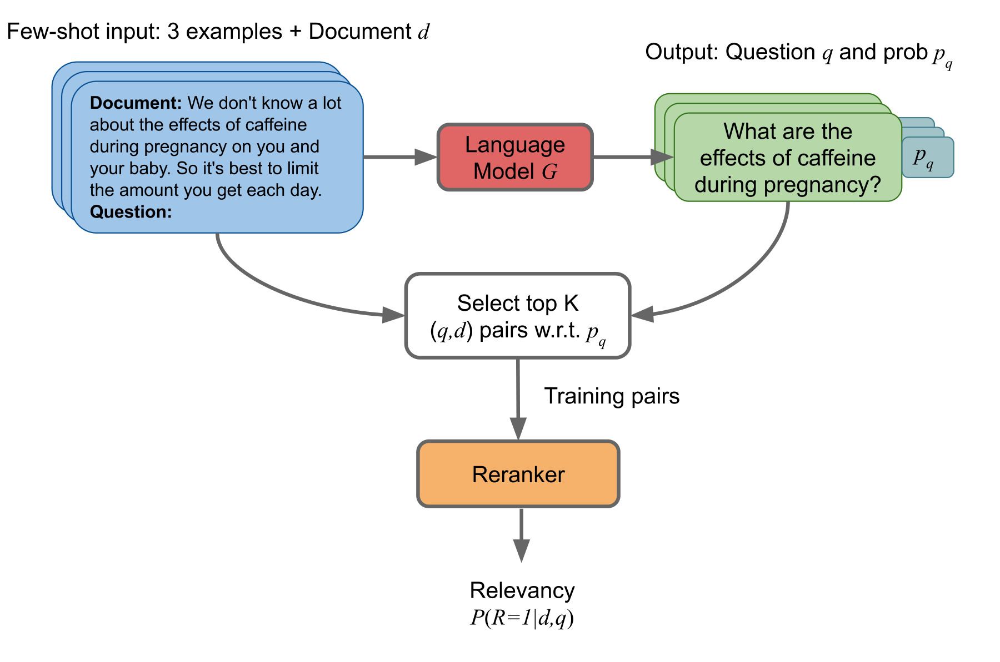
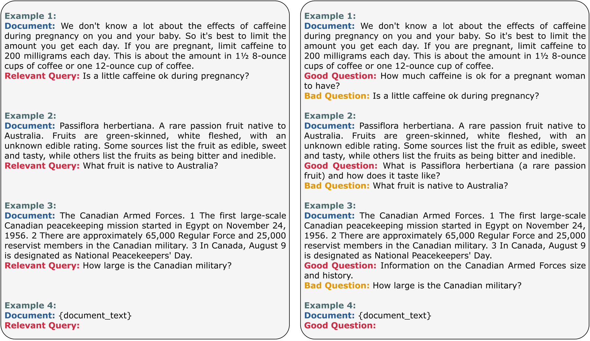

原文: arXiv:2202.05144（v1，2022-02-10） 说明：全文中英逐段对照，英文段落后紧接中文译文，覆盖主文、图表、脚注、参考文献与附录。英文依原文转写，中文为辅助阅读译稿；本次重点校订了提示模板与图表说明。图表编号和原始数值保留，补充说明标作译注。
预印本： arXiv:2202.05144v1 [cs.CL]，2022 年 2 月 10 日。
开源： https://github.com/zetaalphavector/inpars
InPars: Data Augmentation for Information Retrieval using Large Language Models¶
InPars：用大语言模型为信息检索做数据增强¶
Authors / 作者： Luiz Bonifacio†⋄‡⋆, Hugo Abonizio†⋄⋆, Marzieh Fadaee†⋆, and Rodrigo Nogueira†⋄‡◃⋆
† Zeta Alpha。 ⋄ NeuralMind。 ‡ University of Campinas / 坎皮纳斯大学。 ◃ University of Waterloo / 滑铁卢大学。 ⋆ All authors contributed equally. / 全体作者贡献相等。
Abstract / 摘要¶
EN. The information retrieval community has recently witnessed a revolution due to large pretrained transformer models. Another key ingredient for this revolution was the MS MARCO dataset, whose scale and diversity has enabled zero-shot transfer learning to various tasks. However, not all IR tasks and domains can benefit from one single dataset equally. Extensive research in various NLP tasks has shown that using domain-specific training data, as opposed to a general-purpose one, improves the performance of neural models (Yu et al., 2021; Sharami et al., 2022). In this work, we harness the few-shot capabilities of large pretrained language models as synthetic data generators for IR tasks. We show that models finetuned solely on our unsupervised dataset outperform strong baselines such as BM25 as well as recently proposed self-supervised dense retrieval methods. Furthermore, retrievers finetuned on both supervised and our synthetic data achieve better zero-shot transfer than models finetuned only on supervised data. Code, models, and data are available at https://github.com/zetaalphavector/inpars
中. 信息检索社区近来因大规模预训练 Transformer 经历了一场变革。这场变革的另一关键成分是 MS MARCO 数据集：它的规模和多样性使零样本（zero-shot）迁移学习能够用到多种任务上。然而，并非所有信息检索（information retrieval, IR）任务和领域都能从同一个数据集里同等受益。多项 NLP 研究表明，相对通用训练数据，使用领域专用训练数据能提高神经模型的表现（Yu et al., 2021; Sharami et al., 2022）。本文利用大型预训练语言模型的少样本（few-shot）能力，把它们当作 IR 任务的合成数据生成器。结果表明：只在本文这份无监督数据集上微调的模型，超过了 BM25 以及近期提出的自监督稠密检索方法。进一步，在监督数据与本文合成数据上一起微调的检索器，零样本迁移优于只在监督数据上微调的模型。代码、模型与数据见 https://github.com/zetaalphavector/inpars
Introduction / 引言（原文 §1）¶
EN. Language models (LMs) such as GPT-3 (Brown et al., 2020), FLAN (Wei et al., 2022), Gopher (Rae et al., 2021), and T0++ (Sanh et al., 2021) have demonstrated impressive performance on many NLP tasks. Additionally, when sufficient supervised information is not available for a task, they have been shown to be effective and at times yield compelling results (Winata et al., 2021; Schick and Schütze, 2021b).
中. GPT-3（Brown et al., 2020）、FLAN（Wei et al., 2022）、Gopher（Rae et al., 2021）、T0++（Sanh et al., 2021）等语言模型在许多 NLP 任务上表现突出。另外，当一项任务没有足够的监督信息时，它们也被证明有效，有时还能给出有竞争力的结果（Winata et al., 2021; Schick and Schütze, 2021b）。
EN. Despite the appealing capabilities of large LMs, multi-billion parameter models are rarely used in information retrieval (IR), with some notable exceptions (Nogueira et al., 2020; Pradeep et al., 2021; Neelakantan et al., 2022). One reason is the computationally intensive nature of information retrieval tasks. In a typical reranking task, for instance, we compute the relevancy of 1000 candidate documents for one query, which requires 1000 inference passes on a reranking model. This can be prohibitively expensive when using large models. For example, OpenAI offers a search API that allows one to compute query-document relevancy using their models with billions of parameters. As of February 2022, they charge 0.06 USD per 1000 tokens for their largest model.
中. 尽管大语言模型能力诱人，数十亿参数的模型在信息检索里仍然很少被直接使用，少数例外包括 Nogueira et al. (2020)、Pradeep et al. (2021)、Neelakantan et al. (2022)。原因之一是信息检索任务计算很重。以典型重排为例：一条查询要计算 1000 篇候选文档的相关性，也就是在重排模型上做 1000 次推理。用大模型时，这笔开销往往高到不可接受。例如 OpenAI 提供搜索 API，可以用其数十亿参数的模型计算查询–文档相关性。截至 2022 年 2 月，其最大模型按每 1000 个 token 收费 0.06 美元。
Caption EN. Figure 1: Illustration of our few-shot method that generates training data for search tasks. We use a language model \(G\) to generate a question \(q\) (and its probability \(p_q\)) from a document \(d\). The top \(K\) pairs \((q, d)\) with respect to \(p_q\) are used as positive examples to train a reranker whose task it to estimate the relevancy of \(d\) to \(q\).
Caption 中. 图 1：为搜索任务生成训练数据的少样本方法示意。用语言模型 \(G\) 从文档 \(d\) 生成问题 \(q\)（及其概率 \(p_q\)）。按 \(p_q\) 取出最高的 \(K\) 对 \((q, d)\)，作为正例去训练重排器；重排器的任务是估计 \(d\) 对 \(q\) 的相关性。

EN. If each candidate document contains 250 tokens, naively using this API for a reranking task would cost approximately 15 USD per query.
中. 若每篇候选文档含 250 个 token，朴素地用这个 API 做重排，大约每条查询要 15 美元。
EN. Dense retrievers (Karpukhin et al., 2020; Khattab and Zaharia, 2020) avoid this expensive reranking step by precomputing vector representations for each document in the collection prior to retrieval. When a query comes in, only its vector representations are computed, and a fast vector search framework can be used to retrieve the nearest document vectors to the vector representation of the query (Johnson et al., 2019). Despite being computationally cheaper at inference time, dense retrievers need one inference pass to compute the vector representation of each document in the collection, which also makes billion-parameter neural models impracticable to be used as dense retrievers. For a more detailed cost estimation, check this blog post.
中. 稠密检索器（dense retriever；Karpukhin et al., 2020; Khattab and Zaharia, 2020）在检索之前预先计算集合里每篇文档的向量，从而避开这步昂贵的重排。查询到来时，只计算查询自己的向量，再用快速向量搜索框架，取出与查询向量最近的文档向量（Johnson et al., 2019）。尽管推理时更便宜，稠密检索器仍要对集合中每篇文档做一次前向才能得到向量，这同样使十亿参数级神经模型不适合直接当稠密检索器用。更细的成本估计见作者脚注中的博文。
EN. Another challenge in developing neural models for IR is the lack of domain-specific training data. Manually constructing high-quality datasets is difficult as it requires queries from real users. While there are a few general-purpose labeled data available (Nguyen et al., 2016; Kwiatkowski et al., 2019), they are not always effective in generalizing to out-of-domain datasets (Thakur et al., 2021). For this goal, zero-shot and few-shot learning models are in particular promising. However, a cost-effective manner of using large LMs in IR tasks is still an open question.
中. 为 IR 开发神经模型的另一挑战，是缺少领域专用训练数据。手工构建高质量数据集很难，因为需要真实用户的查询。虽然已有若干通用标注数据（Nguyen et al., 2016; Kwiatkowski et al., 2019），它们并不总能有效泛化到域外数据集（Thakur et al., 2021）。就此而言，零样本和少样本学习模型特别有前景。然而，如何以可承受的成本在 IR 任务里使用大语言模型，仍然是一个开放问题。
EN. In this work, we propose a simple yet effective approach towards efficiently using large LMs in retrieval and obtain improvements across several IR datasets. Rather than using large LMs directly in the retrieval process, we harness them to generate labeled data in a few-shot manner. We then finetune retrieval models on this synthetic data and use them to rerank the the search results of a first-stage retrieval system. We summarize our contributions as follows:
中. 本文提出一种简单而有效的做法，以便高效地把大语言模型用到检索上，并在多个 IR 数据集上取得提升。本文不把大语言模型直接放进检索过程，而是用少样本方式让它们生成标注数据。然后在这份合成数据上微调检索模型，并用这些模型重排第一阶段检索系统的搜索结果。贡献概括如下：
EN. We propose a method for adapting large LMs to IR tasks that otherwise are infeasible to be used due to their computational demands.
中. 提出一种把大语言模型适配到 IR 任务上的方法；这些模型若直接使用，会因计算需求而不可行。
EN. In an unsupervised setting, our method largely outperforms recently proposed ones. When combined with supervised finetuning, our method achieves state-of-the-art results in two of the three transfer learning datasets evaluated in this work.
中. 在无监督设定下，本方法大幅超过近期提出的方法。与监督微调结合后，本方法在本文评测的三个迁移学习数据集中的两个上达到当时最优。
Related Work / 相关工作（原文 §2）¶
EN. Data augmentation methods aim at increasing the amount of data to assist the learning process of data-driven models. To improve the performance of neural models in low-resource settings, small-scale LMs have been used to generate synthetic data in various NLP tasks (Fadaee et al., 2017; Kobayashi, 2018). Recent works show that large pretrained LMs are capable of generating data of reasonable quality (Anaby-Tavor et al., 2020; Papanikolaou and Pierleoni, 2020; Yang et al., 2020; Mohapatra et al., 2021; Kumar et al., 2020; Schick and Schütze, 2021a; Meng et al., 2022), sometimes leading to better transfer learning than human generated datasets (Liu et al., 2022).
中. 数据增强方法的目标是增加数据量，以辅助数据驱动模型的学习。为了在低资源设定下提高神经模型表现，小规模语言模型已被用来为多种 NLP 任务生成合成数据（Fadaee et al., 2017; Kobayashi, 2018）。近期工作表明，大型预训练语言模型能够生成质量尚可的数据（Anaby-Tavor et al., 2020; Papanikolaou and Pierleoni, 2020; Yang et al., 2020; Mohapatra et al., 2021; Kumar et al., 2020; Schick and Schütze, 2021a; Meng et al., 2022），有时迁移学习效果还好于人工生成的数据集（Liu et al., 2022）。
EN. In information retrieval, dense retrievers can achieve comparable results to BM25 in some datasets when solely pretrained on documents without annotations (Ram et al., 2021; Izacard et al., 2021; Neelakantan et al., 2022). These methods rely on extracting pairs of segments of texts that are likely relevant to each other which then used as positive pairs to train the retrieval models.
中. 在信息检索里，稠密检索器只在无标注文档上预训练，就能在某些数据集上达到与 BM25 相当的结果（Ram et al., 2021; Izacard et al., 2021; Neelakantan et al., 2022）。这些方法依赖抽取很可能彼此相关的文本片段对，再把这些对当作正例来训练检索模型。
EN. Focusing on improving the transfer learning effectiveness of dense retrievers, Ma et al. (2021) and Wang et al. (2021) use supervised sequence-to-sequence models to augment the training data. They generate questions from texts from different collections and use these synthetic question-text pairs as positive training examples. Our work differs from existing approaches as we rely exclusively on simple prompts to generate questions from large language models with minimal supervision, i.e., using only a few supervised examples. We were mostly inspired by Han et al. (2021), who uses such models to generate synthetic translation pairs in a zero-shot manner, i.e., without using any parallel corpora.
中. 为了提高稠密检索器的迁移效果，Ma et al. (2021) 与 Wang et al. (2021) 用有监督的序列到序列模型扩充训练数据。他们从不同集合的文本生成问题，并把这些合成的问题–文本对当作正训练例。本文与已有做法的差别在于：只靠简单提示，用最少的监督——也就是只用少数几条监督样例——从大语言模型生成问题。主要启发来自 Han et al. (2021)：他们用这类模型以零样本方式生成合成翻译对，也就是不使用任何平行语料。
Our Method: InPars / 方法：InPars（原文 §3）¶
EN. In this section, we describe the proposed method, dubbed InPars (Inquisitive Parrots for Search), for generating synthetic training datasets for IR tasks. Given a document \(d\) and a prefix \(t\) consisting of \(N\) pairs of questions and their relevant documents, i.e., \(t = \{(q^{*}_{1}, d^{*}_{1}), \ldots, (q^{*}_{N}, d^{*}_{N})\}\), our method uses a language model \(G(t, d)\) to generate a question \(q\) that is likely to be relevant to \(d\). The pair \((q, d)\) forms a positive training example that is later used to finetune our retrieval models.
中. 本节描述所提方法 InPars（Inquisitive Parrots for Search，爱追问的鹦鹉，用于搜索），用来为 IR 任务生成合成训练数据集。给定文档 \(d\)，以及由 \(N\) 对问题及其相关文档组成的前缀 \(t\)，即 \(t = \{(q^{*}_{1}, d^{*}_{1}), \ldots, (q^{*}_{N}, d^{*}_{N})\}\)，方法用语言模型 \(G(t, d)\) 生成一个很可能与 \(d\) 相关的问题 \(q\)。对 \((q, d)\) 构成正训练例，随后用来微调检索模型。
EN. We generate thousands of these positive training examples using documents randomly sampled from a collection \(D\). The prefix \(t\) is always the same regardless of the input document \(d\), i.e., we can potentially generate millions of synthetic training examples using only \(N\) manually annotated examples. This characterizes our method as a few-shot learning approach as long as \(N\) is small (in our experiments, we use three examples).
中. 从集合 \(D\) 中随机抽取文档，生成成千上万条这样的正训练例。无论输入文档 \(d\) 是哪一篇，前缀 \(t\) 始终相同。也就是说，只用 \(N\) 条人工标注样例，就有可能生成数百万条合成训练例。只要 \(N\) 很小，这就构成少样本学习（实验中使用三条样例）。
EN. As a last step to create our training dataset, we select the top \(K\) pairs with respect to the following (log) probability:
中. 构建训练数据集的最后一步，是按下式的（对数）概率选出最高的 \(K\) 对：
Equation (1) / 公式 (1)
EN. where \(p(q_i \mid t, d, q_{<i})\) is the probability assigned by \(G\) when autoregressively generating the \(i\)-th token of \(q\). We show in Section 6.3 that this filtering step largely improves IR metrics.
中. 其中 \(p(q_i \mid t, d, q_{<i})\) 是 \(G\) 自回归生成 \(q\) 的第 \(i\) 个 token 时给出的概率。第 6.3 节表明，这一过滤步骤大幅提高 IR 指标。
EN. Due to its few-shot nature, our method can be used to adapt retrievers to any collection or IR task, which we later empirically confirm on various collections. This is particularly relevant for IR tasks as gathering data to train retrieval models is an expensive process (Yilmaz et al., 2020), with most high-quality collections having less than a few hundred queries (Voorhees and Harman, 1999; Voorhees, 2004).
中. 由于少样本这一性质，本方法可以把检索器适配到任意集合或 IR 任务上，后文在多个集合上做了实证。这一点对 IR 尤其要紧：为训练检索模型收集数据代价很高（Yilmaz et al., 2020），多数高质量集合的查询数不到几百条（Voorhees and Harman, 1999; Voorhees, 2004）。
EN. We do not perform any pretraining to adapt the model to the target corpus, such as proposed by Gao and Callan (2021). Our method does not require any modifications in the loss function, as is done by Izacard et al. (2021); Neelakantan et al. (2022). This makes InPars also suitable for non-neural retrieval algorithms.
中. 本文不做任何预训练来把模型适配到目标语料，不像 Gao and Callan (2021) 那样。本方法也不需要像 Izacard et al. (2021)、Neelakantan et al. (2022) 那样修改损失函数。因此 InPars 也适用于非神经检索算法。
Experimental Setup / 实验设置（原文 §4）¶
EN. In this section, we describe the datasets used in this work, the procedure to generate questions from the datasets in an few-shot manner, and finally, how we train retrievers on this synthetic data.
中. 本节说明本文使用的数据集、以少样本方式从这些数据集生成问题的过程，以及如何在这份合成数据上训练检索器。
Datasets / 数据集（原文 §4.1）¶
EN. MS MARCO (Nguyen et al., 2016) is a large-scale ranking dataset with more than half million anonymized questions sampled from Bing’s search query logs. Its passage ranking version is formed by 8.8M passages and approximately 500k training pairs of queries and relevant documents. On average, there is one relevant passage per query, which were manually annotated. The development and test sets contain approximately 6,900 queries each and the test set is kept hidden from the public.
中. MS MARCO（Nguyen et al., 2016）是大规模排序数据集，包含从必应搜索查询日志中采样的五十多万条匿名问题。其段落排序版本由 880 万段落和大约 50 万对查询–相关文档训练对组成。平均每条查询有一篇相关段落，由人工标注。开发集和测试集各约 6,900 条查询，测试集不对公众公开。
EN. TREC-DL (Craswell et al., 2021) is a dataset that uses the same collection of passages from MS MARCO, but it contains only 54 queries and a higher number of judged documents per query.
中. TREC-DL（Craswell et al., 2021）使用与 MS MARCO 相同的段落集合，但只有 54 条查询，且每条查询的已判定文档数更多。
EN. Robust04 (Voorhees, 2005) is an retrieval dataset formed by 249 queries. Its corpus consists of 528k documents from the news wire domain. It has on average 1250.6 judged documents per query.
中. Robust04（Voorhees, 2005）是由 249 条查询构成的检索数据集。语料包含新闻专线领域的 52.8 万篇文档。平均每条查询有 1250.6 篇已判定文档。
EN. Natural Questions (Kwiatkowski et al., 2019) is an open domain Question Answering dataset created from Wikipedia documents. The questions are real anonymized queries submitted to Google’s search engine. In this work, we use the BEIR’s version of NQ, which contains 3,452 queries and 1.21 relevant documents per query in its development set. The corpus consists of 2.6M passages from Wikipedia.
中. Natural Questions（Kwiatkowski et al., 2019）是由维基百科文档构建的开放域问答数据集。问题是提交给谷歌搜索引擎的真实匿名查询。本文使用 BEIR 版 NQ：开发集含 3,452 条查询，平均每条查询 1.21 篇相关文档。语料由维基百科的 260 万段落组成。
EN. TREC-COVID (Roberts et al., 2020) dataset was created during a challenge organized by NIST whose goal was to study information retrieval methods in response to the pandemic. We use the dataset version provided by the BEIR benchmark. The dataset consists of 50 queries, an average of 1,326 judged documents per query, and a corpus of 171k articles from the COVID-19 scientific literature.
中. TREC-COVID（Roberts et al., 2020）产生于 NIST 组织的一次挑战，目标是研究应对疫情的信息检索方法。本文使用 BEIR 基准提供的版本。数据集含 50 条查询，平均每条查询 1,326 篇已判定文档，语料为 COVID-19 科学文献中的 17.1 万篇文章。
Caption EN. Figure 2: “Vanilla” (left) and “GBQ” (right) prompts proposed in this work. The GBQ prompt consists of 3 relevant passages and queries randomly sampled from MS MARCO. The query is used as a bad question and we provide a more descriptive good question for the passage. For the fourth example, we replace {document_text} with a sampled document for which the language model is asked to generate a good question.
Caption 中. 图 2：本文提出的 “Vanilla”（左）与 “GBQ”（右）提示。GBQ 提示由从 MS MARCO 随机抽取的 3 篇相关段落及其查询组成。该查询被当作坏问题（bad question），作者另为该段落写一条更具体的好问题（good question）。第四个例子里，用抽到的文档替换 {document_text}，并要求语言模型生成一条好问题。

EN. Example 1 (shared document). Document: We don't know a lot about the effects of caffeine during pregnancy on you and your baby. So it's best to limit the amount you get each day. If you are pregnant, limit caffeine to 200 milligrams each day. This is about the amount in 1½ 8-ounce cups of coffee or one 12-ounce cup of coffee.
中. 例 1（两边共用的文档）。文档：我们对咖啡因在孕期对你和胎儿的影响了解不多。所以最好限制每天的摄入量。如果怀孕，每天把咖啡因限制在 200 毫克。这大约相当于 1.5 杯 8 盎司咖啡，或 1 杯 12 盎司咖啡。
EN. GBQ, Good Question: How much caffeine is ok for a pregnant woman to have?
中. GBQ 的 Good Question：孕妇可以摄入多少咖啡因？
EN. GBQ, Bad Question: Is a little caffeine ok during pregnancy?
中. GBQ 的 Bad Question：孕期喝一点咖啡因可以吗？
EN. Vanilla, Relevant Query (also used as the bad example in the GBQ prompt): Is a little caffeine ok during pregnancy?
中. Vanilla 的 Relevant Query（也用作右侧 GBQ 提示的坏例子）：孕期喝一点咖啡因可以吗？
EN. Example 2. Document: Passiflora herbertiana. A rare passion fruit native to Australia. Fruits are green-skinned, white fleshed, with an unknown edible rating. Some sources list the fruit as edible, sweet and tasty, while others list the fruits as being bitter and inedible.
中. 例 2。文档：Passiflora herbertiana。一种原产澳大利亚的稀有百香果。果实绿皮、白瓤，可食性评级未知。有的资料说果实可食、甜而好吃，另一些则说果实苦、不可食。
EN. GBQ, Good Question: What is Passiflora herbertiana (a rare passion fruit) and how does it taste like?
中. GBQ 的 Good Question：Passiflora herbertiana（一种稀有百香果）是什么，味道如何？
EN. GBQ, Bad Question: What fruit is native to Australia?
中. GBQ 的 Bad Question：哪种水果原产澳大利亚？
EN. Vanilla, Relevant Query: What fruit is native to Australia?
中. Vanilla 的 Relevant Query：哪种水果原产澳大利亚？
EN. Example 3. Document: The Canadian Armed Forces. 1 The first large-scale Canadian peacekeeping mission started in Egypt on November 24, 1956. 2 There are approximately 65,000 Regular Force and 25,000 reservist members in the Canadian military. 3 In Canada, August 9 is designated as National Peacekeepers' Day.
中. 例 3。文档：加拿大武装部队。1 加拿大第一次大规模维和任务于 1956 年 11 月 24 日在埃及开始。2 加拿大军队约有 65,000 名正规部队和 25,000 名预备役成员。3 在加拿大，8 月 9 日被定为国家维和人员日。
EN. GBQ, Good Question: Information on the Canadian Armed Forces size and history.
中. GBQ 的 Good Question：关于加拿大武装部队规模与历史的信息。
EN. GBQ, Bad Question: How large is the Canadian military?
中. GBQ 的 Bad Question：加拿大军队有多大？
EN. Vanilla, Relevant Query: How large is the Canadian military?
中. Vanilla 的 Relevant Query：加拿大军队有多大？
EN. Example 4, both prompts. Document: {document_text}. Vanilla asks for “Relevant Query:”. GBQ asks for “Good Question:”.
中. 例 4，两种提示相同位置。文档：{document_text}。Vanilla 要求续写 “Relevant Query:”。GBQ 要求续写 “Good Question:”。
Training Data Generation / 训练数据生成（原文 §4.2）¶
EN. Our training set comprises triples of a query, a positive, and a negative document. We first describe how pairs of query and positive documents are generated. We randomly sample 100,000 documents from the collection and generate one question per document using GPT-3’s Curie as our language model \(G\). We prepend the document text with its title, when it is available. Documents with less than 300 characters are discarded and a new one is sampled. We use a temperature of 0, which defaults to greedy decoding. We tried other decoding algorithms such as sampling (with a temperature of 1.0) and top-p sampling (Holtzman et al., 2019) (with p=0.95) but did not notice significant differences in the final results.
中. 训练集由（查询、正文档、负文档）三元组组成。先说明查询与正文档对如何生成。从集合中随机抽取 100,000 篇文档，用 GPT-3 的 Curie 作为语言模型 \(G\)，每篇文档生成一个问题。若有标题，则把标题接在正文前面。少于 300 个字符的文档丢弃并重新抽样。温度取 0，即默认贪心解码。作者也试过采样（温度 1.0）和 top-p 采样（Holtzman et al., 2019，p=0.95），但最终结果没有看到显著差异。
EN. We experiment with two prompt templates for generating questions which are illustrated in Figure 2. The first called “Vanilla” (left), uses \(N = 3\) pairs of document and relevant question randomly chosen from the MS MARCO training dataset. The string {document_text} is replaced with the document sampled from the collection and the language model generates a question one token at a time until a termination token \n is chosen or a maximum number of 64 tokens is reached.
中. 实验使用两种生成问题的提示模板，见图 2。第一种称为 “Vanilla”（左），使用从 MS MARCO 训练集随机抽取的 \(N = 3\) 对文档与相关问题。字符串 {document_text} 替换成从集合中抽到的文档，语言模型一次生成一个 token，直到选出终止符换行，或达到最多 64 个 token。
EN. The second prompt template called “Guided by Bad Questions” (GBQ) illustrated in Figure 2 (right) is similar to the “Vanilla” template, but we encourage the language model to produce more contextual-aware questions than the ones from MS MARCO. For that, we use MS MARCO questions as examples of “bad” questions, and manually create more complicated ones as examples of “good” questions. Rather than finding the answer in part of the input document, the full context of the document will contribute to the answer. With this prompt, the model generates a “good” and a “bad” question for each document and we keep only the good ones to form our positive training pairs. Because the GBQ prompt, by design, generates questions that are different from MS MARCO ones, we use the “Vanilla” prompt to generate questions that are used in finetuning retrievers evaluated on MS MARCO and TREC-DL datasets.
中. 第二种模板称为 “Guided by Bad Questions”（GBQ，由坏问题引导），见图 2 右侧。它与 “Vanilla” 相似，但鼓励语言模型写出比 MS MARCO 问题更懂上下文的问题。做法是：把 MS MARCO 问题当作 “坏” 问题的例子，并人工写出更复杂的问题当作 “好” 问题的例子。答案不应只落在输入文档的某一局部，而应让文档的完整上下文都参与回答。用这一提示时，模型对每篇文档同时生成一条 “好” 问题和一条 “坏” 问题，只保留好问题来构成正训练对。GBQ 按设计就会生成与 MS MARCO 不同的问题，因此在 MS MARCO 和 TREC-DL 上评测的检索器，其微调所用问题由 “Vanilla” 提示生成。
EN. There are four GPT-3 models available to the public via the OpenAI API: Ada, Babbage, Curie and Davinci. Their sizes are not explicitly mentioned, but from the figures reported by Neelakantan et al. (2022) and its accompanying blog post, we infer that Ada, Baggage, Curie and Davinci have 300M, 1.2B, 6B and 175B parameters, respectively. We show in Section 6.2 that questions generated by the more expensive Davinci model lead to marginal improvements in IR metrics. Therefore, throughout this paper, we report results using questions generated by the Curie model.
中. 经 OpenAI API 对公众开放的 GPT-3 模型有四个：Ada、Babbage、Curie 和 Davinci。它们的规模并未明确写出，但根据 Neelakantan et al. (2022) 报告的图及其配套博文，作者推断 Ada、Baggage、Curie 和 Davinci 分别有 3 亿、12 亿、60 亿和 1750 亿参数（原文此处把 Babbage 写成了 Baggage）。第 6.2 节表明，更贵的 Davinci 生成的问题只给 IR 指标带来边际提升。因此全文报告的结果都使用 Curie 生成的问题。脚注链接：https://openai.com/blog/introducing-text-and-code-embeddings/
EN. Of the 100,000 questions generated (and their respective input documents), we use the top \(K=10{,}000\) pairs w.r.t to \(p_q\) as positive examples for finetuning our models.
中. 在生成的 100,000 个问题（及其对应输入文档）中，按 \(p_q\) 取最高的 \(K=10{,}000\) 对，作为微调模型的正例。
EN. Our retrievers are binary classifiers, so we also need to select documents that are not relevant to \(q\) to form negative finetuning examples \((q, d^{-})\). We use a simple method that has been shown to be effective for finetuning rerankers (Pradeep et al., 2021). We use BM25 with \(q\) as query to retrieve 1000 documents from the collection \(D\). We randomly select one of these as \(d^{-}\), and the pair \((q, d^{-})\) forms a negative example.
中. 检索器是二分类器，因此还要选出与 \(q\) 不相关的文档，构成负微调例 \((q, d^{-})\)。作者采用一种已被证明对微调重排器有效的简单方法（Pradeep et al., 2021）。用 BM25、以 \(q\) 为查询，从集合 \(D\) 检索 1000 篇文档。从中随机选一篇作为 \(d^{-}\)，对 \((q, d^{-})\) 构成负例。
Retrieval Methods / 检索方法（原文 §4.3）¶
EN. We use a multi-stage retrieval architecture (Matveeva et al., 2006; Wang et al., 2011; Chen et al., 2017; Liu et al., 2017) comprised of initial retrieval with bag-of-words BM25 (Robertson et al., 1995) followed by a neural reranker.
中. 本文使用多阶段检索架构（Matveeva et al., 2006; Wang et al., 2011; Chen et al., 2017; Liu et al., 2017）：先用词袋 BM25（Robertson et al., 1995）做初始检索，再接神经重排器。
EN. The collection is indexed using pyserini (Lin et al., 2021) and 1000 candidate documents for each query are retrieved using BM25. Then we rerank the candidate documents using monoT5, which is an adaption of the T5 model (Raffel et al., 2020) to text ranking proposed by Nogueira et al. (2020). We finetune monoT5 base (220M parameters) and 3B with a constant learning rate of \(10^{-3}\) and an equal number of positive and negative examples in each batch of size 128. We did not conduct experiments with the 11B version due to its computational cost. To simplify our training procedure (and related hyperparameters) as well as to eliminate the need for convergence checks, we simply train for 156 steps (approximately one epoch). Because the number of training steps is small, we observed a difference of up to two points in the final metric depending on the order in which the training examples are shown to the model. Thus, we report the results that are the average of three seeds. Training T5 base and 3B takes a few minutes on a single Google TPU v3-8.
中. 用 pyserini（Lin et al., 2021）为集合建索引，对每条查询用 BM25 检索 1000 篇候选文档。再用 monoT5 重排这些候选。monoT5 是 Nogueira et al. (2020) 把 T5 模型（Raffel et al., 2020）改成文本排序的做法。微调 monoT5 base（2.2 亿参数）和 3B，学习率恒为 \(10^{-3}\)，每个大小为 128 的 batch 里正例与负例数量相等。因计算成本，没有做 11B 版本的实验。为简化训练过程（及相关超参）并免去收敛检查，直接训练 156 步（大约一个 epoch）。因为训练步数少，作者观察到：训练例展示顺序不同时，最终指标最多可差两个点。因此报告三个随机种子的平均。在单块 Google TPU v3-8 上，训练 T5 base 和 3B 只需几分钟。
EN. We finetune a model per collection using the synthetic questions generated from that collection. In Section 6.1, we show that having in-domain synthetic sets is beneficial. Nevertheless, using only MS MARCO as a source for documents also leads to reasonable results.
中. 每个集合用从该集合生成的合成问题单独微调一个模型。第 6.1 节表明，拥有域内合成集是有益的。尽管如此，只用 MS MARCO 作为文档来源也能得到尚可的结果。
EN. We use a maximum of 512 input tokens and two output tokens (one for the target token and another for the end-of-sequence token). In the experiments with the MS MARCO passage dataset, none of the inputs exceed this length limitation. For NQ and TREC-COVID, documents are often truncated.
中. 输入最多 512 个 token，输出两个 token（一个是目标 token，另一个是序列结束 token）。在 MS MARCO 段落数据集的实验中，没有输入超过这一长度限制。对 NQ 和 TREC-COVID，文档经常被截断。
表 1 / Table 1. Main results. / 主要结果。Figures marked with a † and a ‡ are from Reimers and Gurevych (2020) and Thakur et al. (2021), respectively. Experiments that are too expensive to run are marked with a $ symbol. For example, evaluating Davinci as a reranker on the MS MARCO development set would cost approximately 6.3k USD. ▷ indicates the dataset used for finetuning the model. / 标 † 与 ‡ 的数字分别来自 Reimers and Gurevych (2020) 与 Thakur et al. (2021)。贵到跑不起的实验标 $。例如，用 Davinci 在 MS MARCO 开发集上做重排评测大约要 6.3k 美元。▷ 表示用于微调该模型的数据集。
| MARCO MRR@10 | TREC-DL 2020 MAP | TREC-DL 2020 nDCG@10 | Robust04 MAP | Robust04 nDCG@20 | NQ nDCG@10 | TRECC nDCG@10 | |
|---|---|---|---|---|---|---|---|
| Unsupervised / 无监督 | |||||||
| (1) BM25 | 0.1874 | 0.2876 | 0.4876 | 0.2531 | 0.4240 | 0.3290 | 0.6880 |
| (2) Contriever (Izacard et al., 2021) | — | — | — | — | — | 0.2580 | 0.2740 |
| (3) cpt-text (Neelakantan et al., 2022) | 0.2270 | — | — | — | — | — | 0.4270 |
| OpenAI Search reranking 100 docs from BM25 / 用 OpenAI Search 重排 BM25 的 100 篇 | |||||||
| (4) Ada (300M) | $ | 0.3141 | 0.5161 | 0.2691 | 0.4847 | 0.4092 | 0.6757 |
| (5) Curie (6B) | $ | 0.3296 | 0.5422 | 0.2785 | 0.5053 | 0.4171 | 0.7251 |
| (6) Davinci (175B) | $ | 0.3163 | 0.5366 | 0.2790 | 0.5103 | $ | 0.6918 |
| InPars (ours) / 本文 | |||||||
| (7) monoT5-220M | 0.2585 | 0.3599 | 0.5764 | 0.2490 | 0.4268 | 0.3354 | 0.6666 |
| (8) monoT5-3B | 0.2967 | 0.4334 | 0.6612 | 0.3180 | 0.5181 | 0.5133 | 0.7835 |
| Supervised [▷ MARCO] / 有监督 [▷ MARCO] | |||||||
| (9) Contriever (Izacard et al., 2021) | — | — | — | — | — | 0.4980 | 0.5960 |
| (10) cpt-text (Neelakantan et al., 2022) | — | — | — | — | — | — | 0.6490 |
| (11) ColBERT-v2 (Santhanam et al., 2021) | 0.3970 | — | — | — | — | 0.5620 | 0.7380 |
| (12) GPL (Wang et al., 2021) | — | — | — | — | — | — | 0.7400 |
| (13) miniLM reranker | †0.3901 | — | — | — | — | ‡0.5330 | ‡0.7570 |
| (14) monoT5-220M (Nogueira et al., 2020) | 0.3810 | 0.4909 | 0.7141 | 0.3279 | 0.5298 | 0.5674 | 0.7775 |
| (15) monoT5-3B (Nogueira et al., 2020) | 0.3980 | 0.5281 | 0.7508 | 0.3876 | 0.6091 | 0.6334 | 0.7948 |
| InPars (ours) [▷ MARCO ▷ unsup in-domain] / 本文 [▷ MARCO ▷ 无监督域内] | |||||||
| (16) monoT5-3B | 0.3894 | 0.5087 | 0.7439 | 0.3967 | 0.6227 | 0.6297 | 0.8471 |
EN. Robust04 contains long documents that would require large amounts of memory due to the quadratic cost of the Transformer models. Thus, during finetuning and inference, it is not possible to directly feed the entire text at once to our models. To address this issue, we use a slightly modified version of the MaxP technique of Dai and Callan (2019). We first segment each document into passages by applying a sliding window of 10 sentences with a stride of 5. We then obtain a relevance probability for each passage by classifying it independently. We select the highest probability among these passages as the relevance probability of the document; that is, we do not use the original (BM25) retrieval scores.
中. Robust04 的文档很长，Transformer 的二次代价会需要大量显存。因此微调和推理时不能把整篇文本一次喂给模型。为此采用 Dai and Callan (2019) 的 MaxP 技术的略改版本。先用 10 句的滑动窗口、步长 5，把每篇文档切成段落。再对每个段落独立分类，得到相关性概率。取这些段落中的最高概率作为该文档的相关性概率；也就是不使用原来的 BM25 检索分数。
EN. OpenAI Search API: We also experiment with OpenAI’s Search API as a reranker of 100 documents retrieved by BM25. The Search API provides an endpoint to perform semantic text search over a set of documents, where we provide a query and the top 100 documents retrieved by BM25, and the result is a reranked list with the respective scores. OpenAI does not disclose what is under the hood of their Search API, whether it was finetuned on IR datasets, the prompt used during inference, or its relation with cpt-text (Neelakantan et al., 2022). Therefore we compare their Search API, which uses large LMs as rerankers, with our method, which uses the same LMs to train rerankers with lower inference cost.
中. OpenAI Search API：作者还把 OpenAI 的 Search API 当作重排器，重排 BM25 检索出的 100 篇文档。该 API 提供一个端点，对一组文档做语义文本搜索：输入一条查询和 BM25 检索出的前 100 篇文档，返回带分数的重排列表。OpenAI 不披露 Search API 内部是什么、是否在 IR 数据集上微调过、推理时用的提示，以及它与 cpt-text（Neelakantan et al., 2022）的关系。因此本文把他们的 Search API——把大语言模型当作重排器——与本文方法比较：本文用同样的大语言模型去训练推理成本更低的重排器。脚注链接：https://beta.openai.com/docs/guides/search
EN. We did not rerank more documents due to the high cost of the API (approximately 5.85 USD per 1000 query-document pairs of TREC-DL 2020 using Davinci). Nevertheless, we conducted a single experiment reranking 1000 documents per query using Curie and saw an improvement of almost two nDCG@10 points on TREC-DL 2020 in comparison to reranking 100 documents (0.5602 vs 0.5422). Thus, with more candidate documents, the figures reported for the other datasets in Table 1 would probably be higher.
中. 由于 API 成本高（用 Davinci 时，TREC-DL 2020 大约每 1000 对查询–文档 5.85 美元），没有重排更多文档。尽管如此，作者做了一次实验：用 Curie 对每条查询重排 1000 篇文档，相对重排 100 篇，TREC-DL 2020 的 nDCG@10 提高了将近两个点（0.5602 对 0.5422）。因此，候选文档更多时，表 1 里其他数据集报出的数字大概还会更高。
Results / 结果（原文 §5）¶
EN. The main results are shown in Table 1. We observe that unsupervised models finetuned using our method (rows 7-8), outperform models of equivalent size available in OpenAI’s Search API (rows 4-6). For instance, our monoT5 with 3B parameters (row 8) is significantly better than the larger Curie and Davinci models (rows 5 and 6). InPars also outperforms Contriever (Izacard et al., 2021) and cpt-text (Neelakantan et al., 2022), two unsupervised methods. Neelakantan et al. (2022) (row 3) also use large LMs, but their numbers are much lower than those achieved by InPars or OpenAI’s Search reranking documents from BM25 (rows 4-6).
中. 主要结果见表 1。可以观察到：用本方法微调的无监督模型（第 7–8 行）超过了 OpenAI Search API 中同等规模的模型（第 4–6 行）。例如，本文 30 亿参数的 monoT5（第 8 行）显著好于更大的 Curie 和 Davinci（第 5、6 行）。InPars 也超过两种无监督方法 Contriever（Izacard et al., 2021）和 cpt-text（Neelakantan et al., 2022）。Neelakantan et al. (2022)（第 3 行）同样使用大语言模型，但数字远低于 InPars，也远低于用 OpenAI Search 重排 BM25 文档的结果（第 4–6 行）。
EN. We believe different factors contribute to these results: 1) Due to the query-document interaction, cross-encoders (rows 7-8) are more effective (and contextual) than the independent query and document encoding of bi-encoders (rows 3-6). This is inline with results from Thakur et al. (2021) which shows that bi-encoders and cross-encoders perform similarly when trained and evaluated on the same dataset, but cross-encoders show better zero-shot effectiveness. 2) The synthetic questions generated by InPars have closer resemblance to the queries that the retriever will see at inference time than the sentences extracted from texts used by Contriever and cpt-text. 3) The brand-new queries we generate combined with documents that the model otherwise will not use, provide a completely new training set with high diversity. Diversity in the training data has been shown to lead to improvement in performance of neural models (Qu et al., 2021).
中. 作者认为有几方面因素造成这些结果：1）由于查询与文档有交互，交叉编码器（第 7–8 行）比双编码器对查询和文档分别编码（第 3–6 行）更有效，也更有上下文。这与 Thakur et al. (2021) 一致：在同一数据集上训练并评测时，双编码器与交叉编码器表现相近，但交叉编码器的零样本效果更好。2）InPars 生成的合成问题，比 Contriever 和 cpt-text 从文本中抽出的句子，更接近检索器在推理时会见到的查询。3）本文生成的全新查询，加上模型本来不会用到的文档，提供了一份多样性高的全新训练集。训练数据的多样性已被证明能提高神经模型表现（Qu et al., 2021）。
表 2 / Table 2. Ablation: Few-shot results when using different input documents and prompts to generate questions. / 消融：用不同输入文档和提示生成问题时的少样本结果。
| Input docs / 输入文档 | Prompt / 提示 | MARCO MRR@10 | TREC-DL 2020 MAP | TREC-DL 2020 nDCG@10 | Robust04 MAP | Robust04 nDCG@20 | NQ nDCG@10 | TRECC nDCG@10 | |
|---|---|---|---|---|---|---|---|---|---|
| (1) monoT5-220M | Marco | Vanilla | 0.2585 | 0.3599 | 0.5764 | 0.2242 | 0.4017 | 0.3755 | 0.6727 |
| (2) monoT5-220M | In-domain | GBQ | 0.2279 | 0.3354 | 0.5451 | 0.2490 | 0.4268 | 0.3354 | 0.6666 |
| (3) monoT5-3B | Marco | Vanilla | 0.2967 | 0.4334 | 0.6612 | 0.3397 | 0.5478 | 0.4870 | 0.7606 |
| (4) monoT5-3B | In-domain | GBQ | 0.2819 | 0.4100 | 0.6255 | 0.3180 | 0.5181 | 0.5134 | 0.7835 |
EN. The last row (16) presents the results of monoT5-3B finetuned on MS MARCO and further finetuned on our synthetic datasets. Starting from the model from row 15, we finetuned them on questions generated from the in-domain collection. This procedure achieves the state-of-the-art on Robust04 and TREC-COVID datasets, outperforming the zero-shot transfer achieved by models trained solely on MS MARCO (rows 9-15). This result is especially noteworthy for TREC-COVID, in which the subject is relatively recent and unknown by many pretrained LMs. This indicates that the adaptation to the domain brought by our generation method led to large gains compared to the zero-shot approaches.
中. 最后一行（16）是 monoT5-3B 先在 MS MARCO 上微调、再在本文合成数据集上继续微调的结果。从第 15 行的模型出发，在由域内集合生成的问题上继续微调。这一流程在 Robust04 和 TREC-COVID 上达到当时最优，超过只在 MS MARCO 上训练的模型所做到的零样本迁移（第 9–15 行）。对 TREC-COVID 这一点尤其值得注意：主题相对较新，许多预训练语言模型并不了解。这表明，生成方法带来的领域适配，相对零样本做法有很大增益。
EN. Footnote. TREC DL and MS MARCO results in rows 14-16 are from models finetuned for 10 epochs on MS MARCO. For the other datasets, the models were finetuned for one epoch on MS MARCO as this leads to better zero-shot effectiveness (Pradeep et al., 2020a).
中. 脚注。第 14–16 行在 TREC DL 和 MS MARCO 上的结果，来自在 MS MARCO 上微调了 10 个 epoch 的模型。对其余数据集，模型只在 MS MARCO 上微调一个 epoch，因为这样零样本效果更好（Pradeep et al., 2020a）。
EN. Footnote. We do not report PARADE (Li et al., 2020) results, that achieves an nDCG@20 of 0.6127 on Robust04, since it was finetuned on Robust04 data and are are only comparing against zero-shot models on this dataset.
中. 脚注。本文不报告 PARADE（Li et al., 2020）的结果。它在 Robust04 上的 nDCG@20 为 0.6127，但那是在 Robust04 数据上微调过的，而本文在该数据集上只与零样本模型比较。
EN. As for MS MARCO and TREC DL, further finetuning a model on 10k synthetic examples that was already trained on 530k manually annotated examples led to a slight decrease in effectiveness. We hypothesize that our synthetic examples are different from MS MARCO ones as we sample passages from the MS MARCO corpus to generate questions that do not often appear in the original relevant passage set (e.g., footnotes, texts about advertisements, passages with multiple topics, etc). Thus, any further training on different examples would be harmful when compared to training and evaluating on data of the same distribution.
中. 至于 MS MARCO 和 TREC DL，在已经用 53 万条人工标注例训练过的模型上，再用 1 万条合成例继续微调，效果略有下降。作者的假设是：合成例与 MS MARCO 原例不同，因为是从 MS MARCO 语料里抽样段落来生成问题，这些段落往往不在原来的相关段落集合里（例如脚注、广告文本、包含多个主题的段落等）。因此，相对在同一分布的数据上训练并评测，在不同的例子上继续训练是有害的。
Ablation Study and Analysis / 消融与分析（原文 §6）¶
EN. In this section we take a deeper look into the properties of our proposed approach.
中. 本节更仔细地看所提方法的性质。
Prompt Selection and Source Corpus / 提示选择与来源语料（原文 §6.1）¶
EN. First, we investigate the impact of using different styles of prompts as well as using in-domain or ad hoc collections to generate synthetic data. We compare IR metrics obtained with different prompt templates in Table 2. The column “Input docs” refers to the collection used to generate the questions. Marco indicates that we sampled documents from the MS MARCO passage collection as input for generating questions since models trained on them have shown great generalization capabilities (Pradeep et al., 2020b; Thakur et al., 2021). In contrast, in-domain signifies that questions were generated from documents sampled from the same collections that the model is evaluated on. This approach can be regarded as zero-shot domain adaptation as we do not use any in-domain labeled data to finetune our retrievers. Since the MS MARCO development set and TREC-DL 2020 use the MS MARCO passage collection, this distinction of in-domain and Marco does not apply to these datasets.
中. 首先考察不同风格的提示，以及用域内集合或其他语料集合生成合成数据的影响。表 2 比较不同提示模板得到的 IR 指标。“Input docs” 列是用来生成问题的集合。Marco 表示从 MS MARCO 段落集合抽样文档作为生成问题的输入，因为在其上训练的模型已表现出很强的泛化能力（Pradeep et al., 2020b; Thakur et al., 2021）。相反，in-domain 表示问题由从模型评测所用的同一集合中抽样的文档生成。这一做法可以看作零样本领域适配，因为微调检索器时没有使用任何域内标注数据。由于 MS MARCO 开发集和 TREC-DL 2020 用的就是 MS MARCO 段落集合，域内与 Marco 的区分不适用于这两个数据集。
EN. Column “Prompt” in Table 2 refers to the type of prompt fed to the language model during the question generation step. Preliminary experiments demonstrate that GBQ leads to better performance than the Vanilla prompt when used in combination with in-domain input documents. A marginal gain was observed when using the GBQ prompt on MS MARCO documents. Therefore, we combined Marco with the Vanilla prompt and in-domain with the GBQ prompt in our experiments.
中. 表 2 的 “Prompt” 列是生成问题那一步喂给语言模型的提示类型。初步实验表明：与域内输入文档一起用时，GBQ 好于 Vanilla 提示。在 MS MARCO 文档上使用 GBQ 提示只观察到边际增益。因此实验里把 Marco 与 Vanilla 搭配，把 in-domain 与 GBQ 搭配。
EN. It costs 100-300 USD to generate 100,000 questions using the Curie model regardless of the prompt type. Table 3 shows the difference in the predicted query for both prompts. It is notably observed that GBQ questions tend to be more descriptive and specific to the input document while Vanilla questions are more generic and can be answered by a broader set of documents.
中. 用 Curie 生成 100,000 个问题，无论提示类型，花费 100–300 美元。表 3 展示两种提示预测出的查询有何不同。可以明显看到：GBQ 问题往往更具描述性、更针对输入文档，而 Vanilla 问题更泛，可以被更广的一组文档回答。
EN. Both MS MARCO and TREC-DL 2020 achieved the highest scores using the Vanilla prompt for both monoT5 220M and 3B models. However, for the other datasets (Robust04, NQ, and TREC-COVID), we obtained the highest scores with the GBQ prompt and using questions generated from their collections. The 3B models benefited the most from the in-domain examples, consistently outperforming the Marco results. For smaller monoT5 220M, there is no clear winner between the types of prompts and input documents.
中. MS MARCO 和 TREC-DL 2020 在 monoT5 220M 与 3B 上，都是用 Vanilla 提示得到最高分。对其余数据集（Robust04、NQ、TREC-COVID），最高分来自 GBQ 提示，以及从这些集合自身生成的问题。3B 模型从域内例子中受益最多，稳定超过 Marco 的结果。对更小的 monoT5 220M，提示类型与输入文档之间没有明确的胜者。
译注：上一段按原文翻译。Table 2 中，Robust04 的 3B 模型实际为 MARCO / Vanilla 的 nDCG@20 0.5478 高于域内 GBQ 的 0.5181；不能将文字中的“稳定超过”推广到所有迁移集合。
Model Size Impact on IR Metrics / 模型规模对检索指标的影响（原文 §6.2）¶
EN. In Figure 3 we present the effectiveness on the MS MARCO development set of the monoT5-220M reranker trained on synthetic questions generated using different sizes of GPT-3. As we increase the model size, the IR metric keeps increasing, although very slowly. A hypothesis that explains this gain is that larger models can generate more relevant questions to a given passage, instead of broad and more general questions. Using more specific questions avoids confusing the reranker with questions that are relevant to many passages, which can lead to false-negative examples.
中. 图 3 给出在 MS MARCO 开发集上的效果：monoT5-220M 重排器训练所用的合成问题，由不同规模的 GPT-3 生成。随着模型变大，IR 指标持续上升，但非常慢。解释这一增益的一个假设是：更大的模型能为给定段落生成更相关的问题，而不是宽泛、更一般的问题。使用更具体的问题，可以避免用“对许多段落都相关”的问题扰乱重排器，那种问题会导致假负例。
EN. This relation between GPT-3 model sizes and their IR effectiveness is also observed in the OpenAI Search results presented in Table 1. However, in those results, the Davinci model rivals Curie as the best performing, with the latter delivering a higher score on most experiments.
中. GPT-3 模型规模与 IR 效果之间的这一关系，在表 1 的 OpenAI Search 结果里也能看到。不过在那些结果里，Davinci 与 Curie 争最好，而 Curie 在大多数实验上分数更高。
Caption EN. Figure 3: MRR@10 on the MS MARCO development set achieved by InPars using monoT5-220M reranker trained on synthetic questions generated by GPT-3 models of different sizes. Figures for cpt-text are from (Neelakantan et al., 2022). Note the log scale for the x-axis.
Caption 中. 图 3：InPars 在 MS MARCO 开发集上的 MRR@10。monoT5-220M 重排器训练所用的合成问题，由不同规模的 GPT-3 生成。cpt-text 的数字来自 Neelakantan et al. (2022)。注意横轴为对数刻度。

图示译注。 横轴为参数量（十亿），使用对数尺度；圆点表示 InPars，三角形表示 cpt-text，虚线表示 BM25。图中显示生成器变大时检索效果上升，但后半段收益较小。曲线点位不作为四位小数的精确数据来源；Curie 的 0.2585 与 cpt-text Davinci 的 0.2270 可由表 1 回查。
Filtering by the Most Likely Questions / 按最可能的问题过滤（原文 §6.3）¶
EN. As mentioned in Section 3, we used only the top \(K = 10{,}000\) pairs w.r.t to \(p_q\) to finetune the rerankers. Finetuning on all 100,000 synthetic examples leads to a 4 MRR@10 points decrease on MS MARCO when compared to the top \(K\) filtering approach. Thus, to avoid relying on the test sets and keep the method fully unsupervised, we only evaluated this difference on MS MARCO and applied the filtering approach to all other datasets.
中. 如第 3 节所述，微调重排器时只用按 \(p_q\) 最高的 \(K = 10{,}000\) 对。若在全部 100,000 条合成例上微调，相对 top-\(K\) 过滤，MS MARCO 上的 MRR@10 下降 4 个点。因此，为了不依赖测试集、并保持方法完全无监督，这一差异只在 MS MARCO 上评估，过滤做法则用到所有其他数据集。
Was GPT-3 Trained on Supervised IR Data? / GPT-3 是否在有监督 IR 数据上训练过？（原文 §6.4）¶
EN. The answer to this question is not disclosed to the public, but we tried to answer it by measuring the number of questions produced by GPT-3 that match those in the MS MARCO dataset. Of the 93,200 unique questions produced by the largest model (Davinci), 5,285 were also found in the 1M questions from MS MARCO, i.e., less than 5.7%. Most of these questions contain a single entity (e.g., “what is freedom of the press”, “what is the fda”, “who is gary young”) that are likely to be answered by multiple documents in the collection. Also, the Davinci model produced questions from 6,396 documents marked as relevant in either the training or development sets of MS MARCO. Of those synthetic questions, 725 were found in MS MARCO ground-truth, i.e., less than 12%. Similar numbers were found for smaller models. We argue that these low percentages are evidence that the models were not finetuned on MS MARCO, or at least, they did not memorize it.
中. 这个问题的答案没有向公众披露。作者试图这样回答：统计 GPT-3 生成的问题里有多少与 MS MARCO 数据集中的问题重合。最大模型（Davinci）产出的 93,200 条不重复问题中，有 5,285 条也出现在 MS MARCO 的 100 万条问题里，即不到 5.7%。这些重合问题大多只含一个实体（例如 “what is freedom of the press”、“what is the fda”、“who is gary young”），集合里很可能有多篇文档都能回答。另外，Davinci 从 6,396 篇在 MS MARCO 训练集或开发集中被标为相关的文档上生成了问题。这些合成问题里，有 725 条出现在 MS MARCO 的已标注查询中，即不到 12%。更小的模型得到类似数字。作者认为，这些很低的比例是证据：模型没有在 MS MARCO 上微调过，或者至少没有把它记住。
Conclusion and Future Work / 结论与未来工作（原文 §7）¶
EN. In this work, we presented InPars, a method to generate synthetic training data for IR tasks using large LMs in a few-shot manner. This allows one to harness the information learned by large models in a more efficient and effective way.
中. 本文提出 InPars：用大语言模型以少样本方式为 IR 任务生成合成训练数据。这样就能更高效、也更有效地利用大模型已经学到的信息。
EN. Our experiments demonstrated that using large LMs to generate synthetic training data is a promising direction for development of neural retrievers. There are, however, many directions not explored in this work that we leave as future work: 1) Finetuning dense retrievers on our synthetic data; 2) Using “bad questions” as negative training examples; 3) Scale up our synthetic datasets to millions of examples; 4) More sophisticated methods to select (question, relevant document) pairs.
中. 实验表明，用大语言模型生成合成训练数据，是发展神经检索器的一个有前景的方向。本文仍有许多方向没有探索，留作未来工作：1）在本文合成数据上微调稠密检索器；2）把 “坏问题” 用作负训练例；3）把合成数据集扩大到数百万条；4）用更精细的方法选择（问题，相关文档）对。
Acknowledgments / 致谢¶
EN. This research was partially funded by a grant from Fundação de Amparo à Pesquisa do Estado de São Paulo (FAPESP) 2020/09753-5. We also would like to thank Google Cloud for credits to support this work.
中. 本研究部分由圣保罗州研究基金会（Fundação de Amparo à Pesquisa do Estado de São Paulo, FAPESP）资助，项目号 2020/09753-5。作者也感谢 Google Cloud 提供用于支持本工作的额度。
References / 参考文献¶
正文引用为作者–年份。下列为原文条目；中文是题名对照，不是改写后的引文。
-
Ateret Anaby-Tavor, Boaz Carmeli, Esther Goldbraich, Amir Kantor, George Kour, Segev Shlomov, Naama Tepper, and Naama Zwerdling. 2020. Do not have enough data? deep learning to the rescue! In Proceedings of the AAAI Conference on Artificial Intelligence, volume 34, pages 7383–7390.
中. 数据不够？深度学习来救场。 -
Tom B. Brown, Benjamin Mann, Nick Ryder, Melanie Subbiah, Jared Kaplan, Prafulla Dhariwal, Arvind Neelakantan, Pranav Shyam, Girish Sastry, Amanda Askell, Sandhini Agarwal, Ariel Herbert-Voss, Gretchen Krueger, Tom Henighan, Rewon Child, Aditya Ramesh, Daniel M. Ziegler, Jeffrey Wu, Clemens Winter, Christopher Hesse, Mark Chen, Eric Sigler, Mateusz Litwin, Scott Gray, Benjamin Chess, Jack Clark, Christopher Berner, Sam McCandlish, Alec Radford, Ilya Sutskever, and Dario Amodei. 2020. Language models are few-shot learners. CoRR, abs/2005.14165.
中. 语言模型是少样本学习者。 -
Ruey-Cheng Chen, Luke Gallagher, Roi Blanco, and J Shane Culpepper. 2017. Efficient cost-aware cascade ranking in multi-stage retrieval. In Proceedings of the 40th International ACM SIGIR Conference on Research and Development in Information Retrieval, pages 445–454.
中. 多阶段检索中高效且考虑成本的级联排序。 -
Nick Craswell, Bhaskar Mitra, Emine Yilmaz, and Daniel Campos. 2021. Overview of the TREC 2020 deep learning track. CoRR, abs/2102.07662.
中. TREC 2020 深度学习赛道综述。 -
Zhuyun Dai and Jamie Callan. 2019. Deeper text understanding for IR with contextual neural language modeling. In Proceedings of the 42nd International ACM SIGIR Conference on Research and Development in Information Retrieval, pages 985–988.
中. 用上下文神经语言模型加深 IR 的文本理解。 -
Marzieh Fadaee, Arianna Bisazza, and Christof Monz. 2017. Data augmentation for low-resource neural machine translation. In Proceedings of the 55th Annual Meeting of the Association for Computational Linguistics (Volume 2: Short Papers), pages 567–573.
中. 低资源神经机器翻译的数据增强。 -
Luyu Gao and Jamie Callan. 2021. Unsupervised corpus aware language model pre-training for dense passage retrieval. arXiv:2108.05540.
中. 面向稠密段落检索、感知语料的无监督语言模型预训练。 -
Jesse Michael Han, Igor Babuschkin, Harrison Edwards, Arvind Neelakantan, Tao Xu, Stanislas Polu, Alex Ray, Pranav Shyam, Aditya Ramesh, Alec Radford, et al. 2021. Unsupervised neural machine translation with generative language models only. arXiv:2110.05448.
中. 只用生成式语言模型的无监督神经机器翻译。 -
Ari Holtzman, Jan Buys, Li Du, Maxwell Forbes, and Yejin Choi. 2019. The curious case of neural text degeneration. In International Conference on Learning Representations.
中. 神经文本退化的奇特情形。 -
Gautier Izacard, Mathilde Caron, Lucas Hosseini, Sebastian Riedel, Piotr Bojanowski, Armand Joulin, and Edouard Grave. 2021. Towards unsupervised dense information retrieval with contrastive learning. arXiv:2112.09118.
中. 用对比学习走向无监督稠密信息检索。 -
Jeff Johnson, Matthijs Douze, and Hervé Jégou. 2019. Billion-scale similarity search with GPUs. IEEE Transactions on Big Data.
中. 用 GPU 做十亿级相似度搜索。 -
Vladimir Karpukhin, Barlas Oguz, Sewon Min, Ledell Wu, Sergey Edunov, Danqi Chen, and Wen-tau Yih. 2020. Dense passage retrieval for open-domain question answering. CoRR, abs/2004.04906.
中. 面向开放域问答的稠密段落检索。 -
Omar Khattab and Matei Zaharia. 2020. ColBERT: Efficient and effective passage search via contextualized late interaction over BERT. CoRR, abs/2004.12832.
中. ColBERT：通过 BERT 上的上下文晚交互做高效段落搜索。 -
Sosuke Kobayashi. 2018. Contextual augmentation: Data augmentation by words with paradigmatic relations. arXiv:1805.06201.
中. 上下文增强：用有聚合关系的词做数据增强。 -
Varun Kumar, Ashutosh Choudhary, and Eunah Cho. 2020. Data augmentation using pre-trained transformer models. In Proceedings of the 2nd Workshop on Life-long Learning for Spoken Language Systems, pages 18–26.
中. 用预训练 Transformer 做数据增强。 -
Tom Kwiatkowski, Jennimaria Palomaki, Olivia Redfield, Michael Collins, Ankur Parikh, Chris Alberti, Danielle Epstein, Illia Polosukhin, Matthew Kelcey, Jacob Devlin, Kenton Lee, Kristina N. Toutanova, Llion Jones, Ming-Wei Chang, Andrew Dai, Jakob Uszkoreit, Quoc Le, and Slav Petrov. 2019. Natural questions: a benchmark for question answering research. Transactions of the Association for Computational Linguistics.
中. Natural Questions：问答研究的基准。 -
Canjia Li, Andrew Yates, Sean MacAvaney, Ben He, and Yingfei Sun. 2020. PARADE: Passage representation aggregation for document reranking. arXiv:2008.09093.
中. PARADE：为文档重排聚合段落表示。 -
Jimmy Lin, Xueguang Ma, Sheng-Chieh Lin, Jheng-Hong Yang, Ronak Pradeep, and Rodrigo Nogueira. 2021. Pyserini: A Python toolkit for reproducible information retrieval research with sparse and dense representations. In Proceedings of the 44th Annual International ACM SIGIR Conference on Research and Development in Information Retrieval (SIGIR 2021).
中. Pyserini：用稀疏与稠密表示支持可复现信息检索研究的 Python 工具包。 -
Alisa Liu, Swabha Swayamdipta, Noah A. Smith, and Yejin Choi. 2022. WANLI: Worker and AI collaboration for natural language inference dataset creation.
中. WANLI：工作者与 AI 协作创建自然语言推理数据集。 -
Shichen Liu, Fei Xiao, Wenwu Ou, and Luo Si. 2017. Cascade ranking for operational e-commerce search. In Proceedings of the 23rd ACM SIGKDD International Conference on Knowledge Discovery and Data Mining, pages 1557–1565.
中. 面向线上电商搜索的级联排序。 -
Ji Ma, Ivan Korotkov, Yinfei Yang, Keith Hall, and Ryan McDonald. 2021. Zero-shot neural passage retrieval via domain-targeted synthetic question generation. In Proceedings of the 16th Conference of the European Chapter of the Association for Computational Linguistics: Main Volume, pages 1075–1088.
中. 通过面向领域的合成问题生成做零样本神经段落检索。 -
Irina Matveeva, Chris Burges, Timo Burkard, Andy Laucius, and Leon Wong. 2006. High accuracy retrieval with multiple nested ranker. In Proceedings of the 29th annual international ACM SIGIR conference on Research and development in information retrieval, pages 437–444.
中. 用多层嵌套排序器做高精度检索。 -
Yu Meng, Jiaxin Huang, Yu Zhang, and Jiawei Han. 2022. Generating training data with language models: Towards zero-shot language understanding.
中. 用语言模型生成训练数据：走向零样本语言理解。 -
Biswesh Mohapatra, Gaurav Pandey, Danish Contractor, and Sachindra Joshi. 2021. Simulated chats for building dialog systems: Learning to generate conversations from instructions. In Findings of the Association for Computational Linguistics: EMNLP 2021, pages 1190–1203.
中. 用模拟对话构建对话系统：从指令学习生成对话。 -
Arvind Neelakantan, Tao Xu, Raul Puri, Alec Radford, Jesse Michael Han, Jerry Tworek, Qiming Yuan, Nikolas Tezak, Jong Wook Kim, Chris Hallacy, et al. 2022. Text and code embeddings by contrastive pre-training. arXiv:2201.10005.
中. 用对比预训练得到文本与代码嵌入。 -
Tri Nguyen, Mir Rosenberg, Xia Song, Jianfeng Gao, Saurabh Tiwary, Rangan Majumder, and Li Deng. 2016. MS MARCO: A human generated machine reading comprehension dataset. CoRR, abs/1611.09268.
中. MS MARCO：人工生成的机器阅读理解数据集。 -
Rodrigo Nogueira, Zhiying Jiang, Ronak Pradeep, and Jimmy Lin. 2020. Document ranking with a pretrained sequence-to-sequence model. In Proceedings of the 2020 Conference on Empirical Methods in Natural Language Processing: Findings, pages 708–718.
中. 用预训练序列到序列模型做文档排序。 -
Yannis Papanikolaou and Andrea Pierleoni. 2020. DARE: Data augmented relation extraction with GPT-2. arXiv:2004.13845.
中. DARE：用 GPT-2 做数据增强的关系抽取。 -
Ronak Pradeep, Xueguang Ma, Xinyu Zhang, H. Cui, Ruizhou Xu, Rodrigo Nogueira, Jimmy J. Lin, and D. Cheriton. 2020a. H2oloo at TREC 2020: When all you got is a hammer... deep learning, health misinformation, and precision medicine. In TREC.
中. H2oloo 在 TREC 2020：手头只有锤子时……深度学习、健康错误信息与精准医学。 -
Ronak Pradeep, Xueguang Ma, Xinyu Zhang, Hang Cui, Ruizhou Xu, Rodrigo Nogueira, and Jimmy Lin. 2020b. H2oloo at TREC 2020: When all you got is a hammer... deep learning, health misinformation, and precision medicine. Corpus, 5(d3):d2.
中. H2oloo 在 TREC 2020（同一工作的另一著录）。 -
Ronak Pradeep, Rodrigo Nogueira, and Jimmy Lin. 2021. The expando-mono-duo design pattern for text ranking with pretrained sequence-to-sequence models. arXiv:2101.05667.
中. 用预训练序列到序列模型做文本排序的 expando-mono-duo 设计模式。 -
Yanru Qu, Dinghan Shen, Yelong Shen, Sandra Sajeev, Weizhu Chen, and Jiawei Han. 2021. CoDA: Contrast-enhanced and diversity-promoting data augmentation for natural language understanding. In International Conference on Learning Representations.
中. CoDA：面向自然语言理解、增强对比并促进多样性的数据增强。 -
Jack W. Rae, Sebastian Borgeaud, Trevor Cai, Katie Millican, Jordan Hoffmann, Francis Song, John Aslanides, Sarah Henderson, Roman Ring, Susannah Young, et al. 2021. Scaling language models: Methods, analysis & insights from training Gopher. arXiv:2112.11446.
中. 扩展语言模型：训练 Gopher 的方法、分析与认识。 -
Colin Raffel, Noam Shazeer, Adam Roberts, Katherine Lee, Sharan Narang, Michael Matena, Yanqi Zhou, Wei Li, and Peter J. Liu. 2020. Exploring the limits of transfer learning with a unified text-to-text transformer. Journal of Machine Learning Research, 21:1–67.
中. 用统一的文本到文本 Transformer 探索迁移学习的极限。 -
Ori Ram, Gal Shachaf, Omer Levy, Jonathan Berant, and Amir Globerson. 2021. Learning to retrieve passages without supervision. arXiv:2112.07708.
中. 无监督学习检索段落。 -
Nils Reimers and Iryna Gurevych. 2020. The curse of dense low-dimensional information retrieval for large index sizes. arXiv:2012.14210.
中. 大规模索引上稠密低维信息检索的诅咒。 -
Kirk Roberts, Tasmeer Alam, Steven Bedrick, Dina Demner-Fushman, Kyle Lo, Ian Soboroff, Ellen Voorhees, Lucy Lu Wang, and William R. Hersh. 2020. TREC-COVID: rationale and structure of an information retrieval shared task for COVID-19. Journal of the American Medical Informatics Association, 27(9):1431–1436.
中. TREC-COVID：一项 COVID-19 信息检索共享任务的缘由与结构。 -
S. E. Robertson, S. Walker, S. Jones, M. M. Hancock-Beaulieu, and M. Gatford. 1995. Okapi at TREC-3. NIST special publication, (500225):109–123.
中. Okapi 在 TREC-3。 -
Victor Sanh, Albert Webson, Colin Raffel, Stephen H. Bach, Lintang Sutawika, Zaid Alyafeai, Antoine Chaffin, Arnaud Stiegler, Teven Le Scao, Arun Raja, Manan Dey, et al. 2021. Multitask prompted training enables zero-shot task generalization.
中. 多任务提示训练使零样本任务泛化成为可能。 -
Keshav Santhanam, Omar Khattab, Jon Saad-Falcon, Christopher Potts, and Matei Zaharia. 2021. ColBERTv2: Effective and efficient retrieval via lightweight late interaction. arXiv:2112.01488.
中. ColBERTv2：通过轻量晚交互做有效且高效的检索。 -
Timo Schick and Hinrich Schütze. 2021a. Generating datasets with pretrained language models. arXiv:2104.07540.
中. 用预训练语言模型生成数据集。 -
Timo Schick and Hinrich Schütze. 2021b. It’s not just size that matters: Small language models are also few-shot learners. In Proceedings of the 2021 Conference of the North American Chapter of the Association for Computational Linguistics: Human Language Technologies, pages 2339–2352.
中. 重要的不只是规模：小语言模型也是少样本学习者。 -
Javad Pourmostafa Roshan Sharami, Dimitar Shterionov, and Pieter Spronck. 2022. Selecting parallel in-domain sentences for neural machine translation using monolingual texts.
中. 用单语文本为神经机器翻译挑选平行的域内句子。 -
Nandan Thakur, Nils Reimers, Andreas Rücklé, Abhishek Srivastava, and Iryna Gurevych. 2021. BEIR: A heterogeneous benchmark for zero-shot evaluation of information retrieval models. In Thirty-fifth Conference on Neural Information Processing Systems Datasets and Benchmarks Track (Round 2).
中. BEIR：信息检索模型零样本评测的异构基准。 -
Ellen Voorhees. 2005. Overview of the TREC 2004 robust retrieval track.
中. TREC 2004 稳健检索赛道综述。 -
Ellen M. Voorhees. 2004. Overview of TREC 2004. In TREC.
中. TREC 2004 综述。 -
Ellen M. Voorhees and Donna K. Harman. 1999. Overview of the eighth Text REtrieval Conference (TREC-8). In TREC.
中. 第八届文本检索会议（TREC-8）综述。 -
Kexin Wang, Nandan Thakur, Nils Reimers, and Iryna Gurevych. 2021. GPL: Generative pseudo labeling for unsupervised domain adaptation of dense retrieval. arXiv:2112.07577.
中. GPL：用生成式伪标注做稠密检索的无监督领域适配。 -
Lidan Wang, Jimmy Lin, and Donald Metzler. 2011. A cascade ranking model for efficient ranked retrieval. In Proceedings of the 34th international ACM SIGIR conference on Research and development in Information Retrieval, pages 105–114.
中. 面向高效排序检索的级联排序模型。 -
Jason Wei, Maarten Bosma, Vincent Zhao, Kelvin Guu, Adams Wei Yu, Brian Lester, Nan Du, Andrew M. Dai, and Quoc V. Le. 2022. Finetuned language models are zero-shot learners. In International Conference on Learning Representations.
中. 微调后的语言模型是零样本学习者。 -
Genta Indra Winata, Andrea Madotto, Zhaojiang Lin, Rosanne Liu, Jason Yosinski, and Pascale Fung. 2021. Language models are few-shot multilingual learners. In Proceedings of the 1st Workshop on Multilingual Representation Learning, pages 1–15.
中. 语言模型是少样本多语学习者。 -
Yiben Yang, Chaitanya Malaviya, Jared Fernandez, Swabha Swayamdipta, Ronan Le Bras, Ji-Ping Wang, Chandra Bhagavatula, Yejin Choi, and Doug Downey. 2020. G-DAUG: Generative data augmentation for commonsense reasoning. In Proceedings of the 2020 Conference on Empirical Methods in Natural Language Processing: Findings, pages 1008–1025.
中. G-DAUG：面向常识推理的生成式数据增强。 -
Emine Yilmaz, Nick Craswell, Bhaskar Mitra, and Daniel Campos. 2020. On the reliability of test collections for evaluating systems of different types. In Proceedings of the 43rd International ACM SIGIR Conference on Research and Development in Information Retrieval, pages 2101–2104.
中. 论用测试集合评测不同类型系统时的可靠性。 -
Tiezheng Yu, Zihan Liu, and Pascale Fung. 2021. AdaptSum: Towards low-resource domain adaptation for abstractive summarization.
中. AdaptSum：面向低资源抽象摘要的领域适配。
Appendix / 附录（原文 A）¶
Table 3 / 表 3¶
Caption EN. Table 3: Examples of questions generated from the Robust04 dataset using the Curie model with Vanilla and GBQ prompts.
Caption 中. 表 3：用 Curie 模型、Vanilla 与 GBQ 提示，从 Robust04 数据集生成的问题示例。
EN. Document: South Korean President Kim Yong-sam said Saturday it is imperative that Japan and South Korea work to end North Korea’s isolation and halt its suspected nuclear arms program. In a joint press conference with Prime Minister Morihiro Hosokawa after a second round of summit talks, Kim said that South Korea and Japan share a common interest in developing economic cooperation in the Asia-Pacific region. Peace and security on the Korean peninsula are essential to stability in the region, but vestiges of the Cold War still linger on the peninsula, Kim said. Kim stated that it is imperative that neighboring countries work together toward making North Korea discard its isolationist policy. He also said it is imperative that North Korea give up its suspected nuclear arms development program and return to the South-North dialogue. Reporting his agreement with Hosokawa on economic cooperation in the East Asian region, Kim noted that both sides agreed the lopsided bilateral trade imbalance must be resolved. The president ends a three-day visit to Japan Saturday afternoon, leaving for Shanghai for talks with Chinese leaders. Kim said it was the insincerity of North Korea that brought about the referral of the nuclear issue to the United Nations Security Council. Measures should be taken in accordance with the North’s attitude, the president said, suggesting a flexible stance toward Pyongyang. Hosokawa stressed the need for a firm and unified response of international society to the issue while leaving open a window for dialogue with North Korea.
中. 文档：韩国总统金泳三周六表示，日本与韩国必须共同努力，结束朝鲜的孤立并制止其涉嫌的核武器计划。在与首相细川护熙第二轮首脑会谈后的联合记者会上，金说韩日在发展亚太地区经济合作上有共同利益。他说，朝鲜半岛的和平与安全对地区稳定至关重要，但冷战残余仍留在半岛上。金表示，邻国必须共同努力，使朝鲜放弃孤立主义政策。他还说，朝鲜必须放弃涉嫌的核武器发展计划，并回到南北对话。在谈到与细川关于东亚经济合作的共识时，金指出双方同意必须解决失衡的双边贸易。总统周六下午结束对日本为期三天的访问，前往上海与中国领导人会谈。金说，是朝鲜缺乏诚意才使核问题被提交联合国安理会。总统说应根据北方的态度采取措施，暗示对平壤采取灵活立场。细川强调国际社会需要坚定而统一地回应这一问题，同时为与朝鲜的对话留一扇窗。
EN. Vanilla question: What is the president’s position on North Korea?
中. Vanilla 问题：总统对朝鲜的立场是什么？
EN. GBQ question: What is the South Korean president’s position on North Korea?
中. GBQ 问题：韩国总统对朝鲜的立场是什么？
EN. Document: John West has resigned as non-executive chairman of Dalgety, the food group, and of Bridon, maker of wire rope and engineered products, having just suffered a stroke. Dalgety has appointed Maurice Warren, chief executive, to succeed West, 65, who became chairman of Dalgety only last September. Richard Clothier, who had been due to become chief executive when Warren turns 60 in June, will now do so on April 1. Warren has agreed to remain chairman for the indefinite future and says the appointment will not affect his plans to become non-executive chairman of the South West Electricity Board in June. Bridon yesterday named Derek Edwards, a non-executive director of the company for the past eight years, as chairman, and Brian Clayton as chief executive. Clayton has been responsible for day-to-day executive decisions since David Allday resigned as chief executive in September. John Hogan has been appointed chief operating officer of Lasmo, the independent oil exploration and production company. He replaces Joe Darby who recently became chief executive after Chris Greentree decided to step down. John Hogan has been managing director of Lasmo’s North Sea operations for the past four years. At 39, he is generally regarded as one of the industry’s younger generation of pragmatic managers who have to weigh more keenly the financial risks and rewards of oil exploration in a climate of persistently low oil prices.
中. 文档：John West 刚中风，已辞去食品集团 Dalgety 以及钢丝绳与工程产品制造商 Bridon 的非执行董事长职务。Dalgety 任命首席执行官 Maurice Warren 接替 65 岁的 West；West 去年 9 月才成为 Dalgety 董事长。Richard Clothier 原定在 Warren 今年 6 月满 60 岁时出任首席执行官，现改为 4 月 1 日就任。Warren 同意无限期留任董事长，并说这一任命不影响他 6 月出任西南电力局非执行董事长的计划。Bridon 昨日任命已任公司非执行董事八年的 Derek Edwards 为董事长，Brian Clayton 为首席执行官。自 David Allday 去年 9 月辞去首席执行官以来，Clayton 一直负责日常行政决策。John Hogan 被任命为独立石油勘探与生产公司 Lasmo 的首席运营官。他接替 Joe Darby；Darby 在 Chris Greentree 决定卸任后最近成为首席执行官。John Hogan 过去四年担任 Lasmo 北海业务的常务董事。39 岁的他被普遍视为业内更年轻一代务实管理者之一，必须在油价持续偏低的环境里更仔细地权衡石油勘探的财务风险与回报。
EN. Vanilla question: What is the name of the food group and the wire rope maker?
中. Vanilla 问题：这家食品集团和钢丝绳制造商叫什么名字？
EN. GBQ question: Information on John West’s resignation as non-executive chairman of Dalgety and Bridon
中. GBQ 问题：关于 John West 辞去 Dalgety 与 Bridon 非执行董事长的信息。
EN. Document: WIDE PRICE fluctuations in many commodity markets this week resulted from relatively modest buying and selling orders in thin, pre-Christmas conditions. The sharpest movement was gold’s Dollars 4.85-a-troy-ounce drop over Monday and Tuesday, which traders said was initiated by selling from an individual US trade house. As the price slid towards a support level at Dollars 332 an ounce one dealer told the Reuter news agency that ‘under normal circumstances the volume traded would not have moved the market so much’. The gold price was steadier yesterday, gaining 55 cents to Dollars 332.85 an ounce, but was still Dollars 4.30 down on the week so far. The platinum price followed a similar pattern, recovering Dollars 1.10 at yesterday’s afternoon fixing to reach Dollars 359.60 an ounce, Dollars 3.90 below last Friday’s level, while cash silver was six cents down overall at 370.5 cents an ounce. Most base metals markets at the London Metal Exchange presented a mirror image of the movements in the gold market, slipping back a little yesterday following strong gains earlier in the week. Copper was a case in point. Modest Chinese buying and worries about copper workers joining a Polish general strike were less influential than technical factors in the three months delivery position’s Pounds 54.50 rise to Pounds 1,489.25 a tonne over the first two days, dealers said. Mr Ted Arnold, analyst at the Merrill Lynch financial services group, pointed to the profound effect commodity funds, managing about Dollars 26bn, were having on traded metals markets. ‘These funds tend to work primarily on technical analysis,’ he said.
中. 文档：本周许多商品市场价格大幅波动，原因是圣诞前交投清淡，相对有限的买卖单就推动了价格。最剧烈的是黄金在周一和周二每金衡盎司下跌 4.85 美元；交易员说抛售由一家美国贸易商发起。价格滑向每盎司 332 美元的支撑位时，一名交易商告诉路透，正常情况下这样的成交量不会让市场动这么多。黄金价格昨日较稳，上涨 55 美分至每盎司 332.85 美元，但本周迄今仍下跌 4.30 美元。铂金走势类似，昨日下午定盘回升 1.10 美元至每盎司 359.60 美元，仍比上周五低 3.90 美元；现货白银总体下跌 6 美分，至每盎司 370.5 美分。伦敦金属交易所多数基本金属市场与黄金走势呈镜像：本周早些时候大涨后，昨日略有回落。铜是一例。交易商说，有限的中国买盘以及对铜业工人加入波兰总罢工的担忧，影响力不及技术因素；三个月交割价头两天上涨 54.50 英镑，至每吨 1,489.25 英镑。美林金融服务集团分析师 Ted Arnold 指出，管理约 260 亿美元的商品基金对交易金属市场影响深远。他说，这些基金主要按技术分析操作。
EN. Vanilla question: What is the price of gold?
中. Vanilla 问题：黄金价格是多少？
EN. GBQ question: What is the effect of commodity funds on the price of metals?
中. GBQ 问题：商品基金对金属价格有什么影响？
Table 4 / 表 4¶
Caption EN. Table 4: Examples of questions generated from the TREC-COVID dataset using the Curie model with generated good and bad questions.
Caption 中. 表 4：用 Curie 模型从 TREC-COVID 数据集生成的好问题与坏问题示例。
EN. Document: [Ethical principles compromised during the COVID-19 pandemic?]. In the late 1970s, the American bioethicists Tom Beauchamp and James Childress described the four ethical principles that should guide a physician’s actions in individual patient care. These principles are: (a) respect for autonomy; (b) doing well (beneficence); (c) not harming (non-maleficence); and (d) justice. In many countries, the global outbreak of SARS-CoV-2 has led to overloaded healthcare systems due to large numbers of COVID-19 patients. In order to provide care to this high volume of patients, far-reaching measures are taken that affect everyone. These measures are not taken from an individual patient’s perspective but in the interest of public health; nonetheless, they can directly affect the individual patient’s interests. This article examines the extent to which Beauchamp and Childress’ ethical principles may be compromised during the COVID-19 pandemic.
中. 文档：［COVID-19 大流行期间伦理原则是否受到损害？］1970 年代末，美国生命伦理学家 Tom Beauchamp 与 James Childress 描述了应当指导医生在个体患者照护中行动的四项伦理原则：（a）尊重自主；（b）行善（beneficence）；（c）不伤害（non-maleficence）；（d）公正。在许多国家，SARS-CoV-2 的全球暴发使大量 COVID-19 患者压垮医疗系统。为了照护这么多患者，采取了影响所有人的深远措施。这些措施不是从单个患者的视角出发，而是为了公共卫生；尽管如此，它们可以直接影响单个患者的利益。本文考察 COVID-19 大流行期间 Beauchamp 与 Childress 的伦理原则可能在多大程度上受到损害。
EN. Bad question: What are Beauchamp and Childress’ ethical principles?
中. 坏问题：Beauchamp 与 Childress 的伦理原则是什么？
EN. Good question: How does Beauchamp and Childress’ ethical principles apply to the COVID-19 pandemic?
中. 好问题：Beauchamp 与 Childress 的伦理原则如何应用于 COVID-19 大流行？
EN. Document: Covid-19 Confinement and Changes of Adolescent’s Dietary Trends in Italy, Spain, Chile, Colombia and Brazil. Confinement due to the COVID-19 pandemic can influence dietary profiles, especially those of adolescents, who are highly susceptible to acquiring bad eating habits. Adolescents’ poor dietary habits increase their subsequent risk of degenerative diseases such as obesity, diabetes, cardiovascular pathologies, etc. Our aim was to study nutritional modifications during COVID-19 confinement in adolescents aged 10 to 19 years, compare them with their usual diet and dietary guidelines, and identify variables that may have influenced changes. Data were collected by an anonymous online questionnaire on food intake among 820 adolescents from Spain, Italy, Brazil, Colombia, and Chile. The results show that COVID-19 confinement did influence their dietary habits. In particular, we recorded modified consumption of fried food, sweet food, legumes, vegetables, and fruits. Moreover, gender, family members at home, watching TV during mealtime, country of residence, and maternal education were diversely correlated with adequate nutrition during COVID-19 confinement. Understanding the adolescents’ nutrition behavior during COVID-19 lockdown will help public health authorities reshape future policies on their nutritional recommendations, in preparation for future pandemics.
中. 文档：COVID-19 封控与意大利、西班牙、智利、哥伦比亚和巴西青少年饮食趋势的变化。疫情导致的封控会影响饮食结构，尤其是青少年，他们很容易养成不良饮食习惯。青少年不良饮食会提高日后肥胖、糖尿病、心血管病等退行性疾病的风险。目的是研究 10 至 19 岁青少年在 COVID-19 封控期间的营养变化，与其日常饮食及膳食指南比较，并找出可能影响变化的变量。数据来自对西班牙、意大利、巴西、哥伦比亚和智利 820 名青少年食物摄入的匿名在线问卷。结果显示封控确实影响了饮食习惯。具体记录到油炸食品、甜食、豆类、蔬菜和水果的消费发生变化。此外，性别、家中成员、进餐时看电视、居住国和母亲教育程度，与封控期间营养是否充足有不同的相关。理解青少年在封锁期间的营养行为，将帮助公共卫生当局重塑未来的营养建议政策，为今后的大流行做准备。
EN. Bad question: What is the COVID-19 pandemic?
中. 坏问题：COVID-19 大流行是什么？
EN. Good question: What is COVID-19 and how does it affect adolescents?
中. 好问题：COVID-19 是什么，它如何影响青少年？
EN. Document: 67 CF patients with a declining FEV(1): At risk for acquisition of Burkholderia cepacia complex infection?. INTRODUCTION: Burkholderia cepacia complex (Bcc) infection is considered to be associated with worsening of CF lung disease. Patient to patient spread has been reported, however mechanisms of acquisition of Bcc are not well understood. Method: Data from the Belgian CF Registry (year 2000–2010) were collected. Inclusions: Bcc infected patients with entries on lung function in at least 1 y before and 3 y after Bcc acquisition. For each case, we included 2 controls, matched for age at the index year (year of first Bcc infection), pancreatic status, sex. Cumulative data up to 2 years before index year were compared to values obtained after infection using Rank sum test. Rate of decline in lung function was adjusted for baseline lung function, age, sex. RESULTS: Bcc prevalence in CF is low in Belgium (<3%). 183 patients were included: 61 cases, 122 controls. 59% were F508del homozygous. Mean age in cases was 20.9 y (SD 10.5) vs 20.3 y (SD 10.3) in controls. Among the Bcc, 54% were unspecified, 31% were B. multivorans. Mean FEV(1) at index year was 65.2% (SD 24.9) in cases vs 73.1 (SD 26.9) in controls (p = 0.07). FEV(1) decline before index year was significantly higher in cases (−1.7%, SD 0.5) compared to controls (−1.0%, SD 0.3) (p = 0.002). FEV(1) slopes were comparable in the period after index year (−1.1%, SD 0.5, in cases vs −0.99%, SD 0.4, p = 0.24). CONCLUSION: Our results suggest that a declining FEV(1) precedes acquisition of Bcc and may be a risk factor. After acquisition, lung function decline was comparable in Bcc infected and uninfected patients. These results should be interpreted with caution, since registry data are collected retrospectively and bear a risk of incompleteness or inaccuracy.
中. 文档：67 名 FEV(1) 下降的囊性纤维化（CF）患者：是否有感染伯克霍尔德菌复合群的风险？引言：伯克霍尔德菌复合群（Burkholderia cepacia complex, Bcc）感染被认为与 CF 肺病恶化有关。已有患者之间传播的报告，但获得 Bcc 的机制尚不清楚。方法：收集比利时 CF 登记（2000–2010 年）数据。纳入：感染 Bcc、且在获得 Bcc 之前至少 1 年、之后 3 年有肺功能记录的患者。每个病例纳入 2 名对照，按索引年（首次 Bcc 感染年）的年龄、胰腺状态和性别匹配。用秩和检验比较索引年前最多 2 年的累积数据与感染后的数值。肺功能下降速率按基线肺功能、年龄和性别调整。结果：比利时 CF 中 Bcc 患病率低（<3%）。纳入 183 名患者：61 例、122 名对照。59% 为 F508del 纯合。病例平均年龄 20.9 岁（标准差 10.5），对照 20.3 岁（标准差 10.3）。Bcc 中 54% 未分型，31% 为 B. multivorans。索引年病例平均 FEV(1) 为 65.2%（标准差 24.9），对照为 73.1（标准差 26.9）（p = 0.07）。索引年前 FEV(1) 下降在病例中显著更大（−1.7%，标准差 0.5），对照为 −1.0%（标准差 0.3）（p = 0.002）。索引年之后 FEV(1) 斜率相当（病例 −1.1%，标准差 0.5；对照 −0.99%，标准差 0.4，p = 0.24）。结论：结果提示 FEV(1) 下降先于获得 Bcc，可能是危险因素。获得之后，感染与未感染患者的肺功能下降相当。这些结果应谨慎解释，因为登记数据是回顾性收集的，有不完整或不准确的风险。
EN. Bad question: What is the prevalence of Bcc in CF patients?
中. 坏问题：CF 患者中 Bcc 的患病率是多少？
EN. Good question: What is Burkholderia cepacia complex (Bcc) and how does it affect CF patients?
中. 好问题：伯克霍尔德菌复合群（Bcc）是什么，它如何影响 CF 患者？
EN. Document: Safety and effectiveness of 5-mm and 10-mm electrothermal bipolar vessel sealers (LigaSure) in laparoscopic resections for sigmoid colon and rectal cancers. BACKGROUND LigaSure (Covidien, Mansfield, MA) has been used in cases undergoing laparoscopic colon and rectal resections. This study aims to analyze the efficacy and safety of the 5-mm and 10-mm devices. SUBJECTS AND METHODS Patients who received a laparoscopic or hand-assisted laparoscopic operation for a tumor located in the sigmoid colon or rectum since 2006 were abstracted from a prospectively designed database, and findings were analyzed in two groups based on size of the device used during the procedure. The videotapes of the procedures were watched, and operation reports were read to obtain further information on specific intra- and postoperative complications. Demographics, tumor and operation-related information, and postoperative data were compared. RESULTS Among 215 (128 [59.5%] males; median age, 59.5±13.8 years) patients, data obtained from the 5-mm (n=32) and 10-mm (n=183) groups were identical regarding demographics and data related to tumor (localization and stage) and operation (number of harvested lymph nodes, conversion rates, operation time, intraoperative bleeding, transfusion requirement, reoperation rates, complications, 30-day mortality, and length of hospital stay). However, more patients underwent an anterior resection in the 10-mm group than in the 5-mm group (31.7% versus 15.6%, P<.05). Further analyses found device-related bleeding in 8 (3.7%) cases (2 [6.3%] versus 6 [3.3%] in the 5-mm versus 10-mm group, respectively, P>.05), requiring further attempts for hemorrhage control (n=6), conversion to open surgery (n=1), or relaparotomy (n=1). CONCLUSIONS The 5-mm and 10-mm LigaSure devices are similarly effective and safe during laparoscopic sigmoid colon and rectal resections. Severe bleeding from larger vessels may be observed, requiring conversion to open surgery or relaparotomy. The source text of this document ends with the fragment: ", "question": "What is the safety and effectiveness of the LigaSure device?
中. 文档：5 毫米与 10 毫米电热双极血管闭合系统（LigaSure）在乙状结肠癌和直肠癌腹腔镜切除中的安全性与有效性。背景：LigaSure（Covidien，马萨诸塞州曼斯菲尔德）已用于接受腹腔镜结肠与直肠切除的病例。本研究旨在分析 5 毫米与 10 毫米器械的疗效和安全性。对象与方法：从前瞻设计的数据库中抽取 2006 年以来因乙状结肠或直肠肿瘤接受腹腔镜或手助腹腔镜手术的患者，按术中所用器械尺寸分成两组分析。观看手术录像并阅读手术报告，以获得特定术中与术后并发症的进一步信息。比较人口学、肿瘤与手术相关信息以及术后数据。结果：215 名患者（128 名［59.5%］男性；中位年龄 59.5±13.8 岁）中，5 毫米组（n=32）与 10 毫米组（n=183）在人口学以及肿瘤（部位与分期）和手术（清扫淋巴结数、中转率、手术时间、术中出血、输血需求、再次手术率、并发症、30 天死亡率、住院时间）相关数据上相同。但 10 毫米组接受前切除的患者多于 5 毫米组（31.7% 对 15.6%，P<.05）。进一步分析发现 8 例（3.7%）与器械相关的出血（5 毫米组 2 例［6.3%］，10 毫米组 6 例［3.3%］，P>.05），需要进一步止血（n=6）、中转开腹（n=1）或再次剖腹（n=1）。结论：5 毫米与 10 毫米 LigaSure 在腹腔镜乙状结肠和直肠切除中同样有效且安全。较大血管可能出现严重出血，需要中转开腹或再次剖腹。该文档原文末尾带有片段：", "question": "What is the safety and effectiveness of the LigaSure device?
EN. Bad question: What is the LigaSure device?
中. 坏问题：LigaSure 器械是什么？
EN. Good question: What is the safety and effectiveness of the LigaSure device?
中. 好问题：LigaSure 器械的安全性与有效性如何？
Table 5 / 表 5¶
Caption EN. Table 5: Examples of questions generated from the Natural Questions dataset using the Curie model with generated good and bad questions.
Caption 中. 表 5：用 Curie 模型从 Natural Questions 数据集生成的好问题与坏问题示例。
EN. Document: 1993 Miami Dolphins season. The season was marked by Don Shula passing George Halas’s record for most wins, against the Philadelphia Eagles. Also, during the Week 5 game against Cleveland, quarterback Dan Marino ruptured his Achilles’ tendon and was lost for the remainder of the season. Quarterback Scott Mitchell filled in for Marino, and was Player of the Month for October 1993. Mitchell, too, became injured, leaving the then 9–2 team in the hands of Doug Pederson and NFL veteran Steve DeBerg.
中. 文档：1993 年迈阿密海豚赛季。该赛季的标志是 Don Shula 在对费城老鹰的比赛中超过 George Halas 的胜场纪录。另外，在第 5 周对克利夫兰的比赛中，四分卫 Dan Marino 跟腱断裂，本赛季剩余比赛报销。四分卫 Scott Mitchell 顶上，并成为 1993 年 10 月的月度最佳球员。Mitchell 随后也受伤，把当时 9–2 的球队交给 Doug Pederson 和 NFL 老将 Steve DeBerg。
EN. Bad question: What happened to Dan Marino?
中. 坏问题：Dan Marino 怎么了？
EN. Good question: What happened to the 1993 Miami Dolphins?
中. 好问题：1993 年迈阿密海豚队发生了什么？
EN. Document: Social construction of gender. On Butler’s hypothesis, the socially constructed aspect of gender performativity is perhaps most obvious in drag performance, which offers a rudimentary understanding of gender binaries in its emphasis on gender performance. Butler understands drag cannot be regarded as an example of subjective or singular identity, where “there is a ‘one’ who is prior to gender, a one who goes to the wardrobe of gender decides with deliberation which gender it will be today”.[34]:21 Consequently, drag should not be considered the honest expression of its performer’s intent. Rather, Butler suggests that what is performed “can only be understood through reference to what is barred from the signifier within the domain of corporeal legibility”.[34]:24
中. 文档：性别的社会建构。按 Butler 的假说，性别操演中被社会建构的一面，也许在变装表演里最明显；变装强调性别表演，从而对性别二元提供了一种初步理解。Butler 认为变装不能被看成主观或单一身份的例子，即“存在一个先于性别的‘一个人’，这个人走到性别的衣橱前，审慎决定今天做哪种性别”。［34］:21 因此，变装不应被看成表演者意图的诚实表达。Butler 认为，被表演的东西“只能通过参照在身体可辨认领域中被能指排除的东西来理解”。［34］:24
EN. Bad question: What is drag?
中. 坏问题：变装是什么？
EN. Good question: What is the social construction of gender?
中. 好问题：性别的社会建构是什么？
EN. Document: Wentworth Miller. In 1995, Miller relocated to Los Angeles to pursue an acting career.[10] He has stated that his rocky road to stardom “was a long time in the coming and there were a lot of upsets and a lot of failures and roadblocks, but I couldn’t walk away from it. I needed it like I needed air, it was just something I had to do.”[11] Miller’s first TV appearance was as student-turned-sea monster Gage Petronzi on Buffy the Vampire Slayer (“Go Fish”, 1998).
中. 文档：Wentworth Miller。1995 年，Miller 搬到洛杉矶追求演艺事业。［10］他说自己通往明星的坎坷路“酝酿了很久，有许多挫折、失败和路障，但我不能走开。我需要它，就像需要空气，这是我必须做的事。”［11］Miller 的首次电视出场是在《吸血鬼猎人巴菲》（“Go Fish”，1998）里饰演由学生变成海怪的 Gage Petronzi。
EN. Bad question: What is Wentworth Miller’s first TV appearance?
中. 坏问题：Wentworth Miller 的首次电视出场是什么？
EN. Good question: Information on Wentworth Miller’s acting career.
中. 好问题：关于 Wentworth Miller 演艺生涯的信息。
EN. Document: Sport in Argentina. The national team has won the FIFA World Cup twice (in 1978 and 1986), successive Olympic gold medals (in 2004 and 2008), fourteen Copas América, one Confederations Cup and six World Youth Championships. Argentine clubs have won the Copa Libertadores, the top continental competition, a record 22 times and the Intercontinental Cup or FIFA Club World Cup 8 times, a record shared with Brazilian clubs. The Argentine Primera División is the top level domestic competition. The country’s most famed football idol is Diego Maradona. Actually the most famous football player is Lionel Messi. The source text of this document ends with the fragment: ", "question": "Information on the Argentine national team and their history.
中. 文档：阿根廷的体育。国家队两次赢得国际足联世界杯（1978 与 1986），连续获得奥运金牌（2004 与 2008），十四次美洲杯、一次联合会杯和六次世界青年锦标赛。阿根廷俱乐部赢得南美解放者杯（顶级洲际赛事）创纪录的 22 次，以及洲际杯或国际足联俱乐部世界杯 8 次，这一纪录与巴西俱乐部共享。阿根廷足球甲级联赛是国内最高级别赛事。该国最著名的足球偶像是 Diego Maradona。实际上目前最著名的足球运动员是 Lionel Messi。该文档原文末尾带有片段：", "question": "Information on the Argentine national team and their history.
EN. Bad question: What is the most famous football player in Argentina?
中. 坏问题：阿根廷最著名的足球运动员是谁？
EN. Good question: Information on the Argentine national team and their history.
中. 好问题：关于阿根廷国家队及其历史的信息。
EN. Document: American game show winnings records. In 1999, McKee was passed by Michael Shutterly, who was the biggest winner in the first airing of Who Wants to Be a Millionaire in the United States. Shutterly was the first contestant on the show to get to the 15th and final question, but elected to walk instead with $500,000 (equivalent to $719,000 in 2016),[1] which made him the biggest winner in American game show history at the time. Shutterly had previously won $49,200 as a 4 day champion on Jeopardy! in 1988, making his career winnings total $549,200. [12]
中. 文档：美国游戏节目奖金纪录。1999 年，McKee 被 Michael Shutterly 超过。Shutterly 是美国版《谁想成为百万富翁》首播中的最大赢家。他是该节目第一个走到第 15 题、也就是最后一题的参赛者，但选择带走 500,000 美元（按 2016 年购买力约合 719,000 美元）［1］，从而成为当时美国游戏节目史上的最大赢家。Shutterly 此前在 1988 年《危险边缘》上作为四日冠军赢得 49,200 美元，生涯总奖金为 549,200 美元。［12］
EN. Bad question: What is the biggest winner in the history of American game shows?
中. 坏问题：美国游戏节目史上的最大赢家是什么？
EN. Good question: Who is the biggest winner in the history of American game shows?
中. 好问题：谁是美国游戏节目史上的最大赢家？
EN. Document: New Zealand Warriors. The Warriors reached their zenith to date in the National Rugby League season 2002. They won the Minor Premiership, finishing in first place at the conclusion of the regular season after the Bulldogs lost 37 competition points late in the season due to severe salary cap breaches. The club played what stands as the first finals match to have been held outside Australia at Mt Smart Stadium in the first week of the Finals Series. The Warriors would defeat their bogey side Canberra 36–20 after surviving an early scare.
中. 文档：新西兰勇士队。勇士队在 2002 年国家橄榄球联赛赛季达到迄今的巅峰。他们赢得常规赛冠军（Minor Premiership），在常规赛结束时名列第一；当时斗牛犬队因严重违反工资帽，在赛季后期被扣 37 个积分。俱乐部在总决赛系列赛第一周于 Mt Smart 体育场进行了至今仍算作澳大利亚以外举办的第一场决赛。勇士队在开局受惊后以 36–20 击败克星堪培拉队。
EN. Bad question: What is the National Rugby League?
中. 坏问题：国家橄榄球联赛是什么？
EN. Good question: Information on the New Zealand Warriors.
中. 好问题：关于新西兰勇士队的信息。